India Places
- choose
- Amritsar
- Delhi
- Jaipur
- Leh-Ladakh India
- Manali
- Nainital
- Srinagar
- Mahabaleshwar
- Ajanta Ellora Caves
- Kutch
- Mumbai
- Goa
- Andaman & Nicobar Island
- Hyderabad
- Mahabalipuram
- Mysore
- Ooty
- Amarkantak
- Bhopal
- Gwalior
- Jabalpur
- Omkareshwar
- Bodh Gaya
- Kolkata
- Konark
- Darjeeling
- Puri
- Gangtok
- Tawang
- Majuli
- North Sikkim
- Shillong
Amritsar Tourism -- Gateway to Punjab- home to Golden Temple
Home of the glorious Golden Temple, the iconic city of Amritsar, portrays the
heroic character of the Punjab. A day in this peaceful city starts with the spiritual prayers from Gurudwaras. The original name of rst the ancient lake, then of the
temple complex, and later the surrounding city, meaning "pool of ambrosial nectar."
Amritsar is the spiritual and cultural centre of the Sikh Religion. Baisakhi festival brings out Amritsar's resplendent face with its nest food, clothes and merrymaking. This place is also famous for its Jallianwala Bagh massacre and its proximity to Wagah Border. The satiating food and generous dollops of legendary
Punjabi hospitality further connive to cast a spell upon the visitor. From the Operation Blue Star in the Golden Temple to the tragedy of the Jallianwala Bagh
massacre, Amritsar has seen the worst of situations and yet emerged like a phoenix through testing times. Amritsar today is a thriving city with active trade and
tourism industries. One of the most agriculturally productive cities of India, Amritsar is well connected with most of the important cities of India
Thinks To Do
Golden Temple

JallianWala Bagh
Wagah Border

Guru Ke Mahal

History
Amritsar, derives its name from Amrit Sarovar which was built by Guru Ram Das in the village of Tung. Guru Ram Das believed that the waters of the lake had healing powers. The land was bought by him for a small amount of 700 rupees, and a temple complex was built around it. Gradually, the village developed and came to be known as Chakk Ram Das which nally became Amritsar that translates to pool of nectar.
Religious Places in Amritsar
Amritsar is a very important religious centre for Hindus and Sikhs. The many temples and Gurudwaras include Gurdwara Manji Sahib, Akal Takht, Shivala Bhaian Temple, Gurdwara Bebaaksar Sahib, Gurdwara Bir Baba Budha, Tala Sahib Gurudwara and the Gopal mandir.
Jalianwala Bagh Massacre
One of the most tragic incidents in Colonial India occurred at the Jalianwala Bagh on 13th April 1919. Farmers from various villages had gathered here, unaware of a new law that banned meetings among locals. Suspecting a protest, the British ocials under Colonel Reginald Dyer opened re in the area and created a havoc situations. Many were killed by the bullets, many in the stampede and many others jumped into a nearby well in an attempt to save themselves. The death toll is believed to be 379. The pace still has bullet marks and blood stains in and around the well.
Amritsar, derives its name from Amrit Sarovar which was built by Guru Ram Das in the village of Tung. Guru Ram Das believed that the waters of the lake had healing powers. The land was bought by him for a small amount of 700 rupees, and a temple complex was built around it. Gradually, the village developed and came to be known as Chakk Ram Das which nally became Amritsar that translates to pool of nectar.
Religious Places in Amritsar
Amritsar is a very important religious centre for Hindus and Sikhs. The many temples and Gurudwaras include Gurdwara Manji Sahib, Akal Takht, Shivala Bhaian Temple, Gurdwara Bebaaksar Sahib, Gurdwara Bir Baba Budha, Tala Sahib Gurudwara and the Gopal mandir.
Jalianwala Bagh Massacre
One of the most tragic incidents in Colonial India occurred at the Jalianwala Bagh on 13th April 1919. Farmers from various villages had gathered here, unaware of a new law that banned meetings among locals. Suspecting a protest, the British ocials under Colonel Reginald Dyer opened re in the area and created a havoc situations. Many were killed by the bullets, many in the stampede and many others jumped into a nearby well in an attempt to save themselves. The death toll is believed to be 379. The pace still has bullet marks and blood stains in and around the well.
Amritsar Tourism -- Gateway to Punjab- home to Golden Temple
Home of the glorious Golden Temple, the iconic city of Amritsar, portrays the
heroic character of the Punjab. A day in this peaceful city starts with the spiritual prayers from Gurudwaras. The original name of rst the ancient lake, then of the
temple complex, and later the surrounding city, meaning "pool of ambrosial nectar."
Amritsar is the spiritual and cultural centre of the Sikh Religion. Baisakhi festival brings out Amritsar's resplendent face with its nest food, clothes and merrymaking. This place is also famous for its Jallianwala Bagh massacre and its proximity to Wagah Border. The satiating food and generous dollops of legendary
Punjabi hospitality further connive to cast a spell upon the visitor. From the Operation Blue Star in the Golden Temple to the tragedy of the Jallianwala Bagh
massacre, Amritsar has seen the worst of situations and yet emerged like a phoenix through testing times. Amritsar today is a thriving city with active trade and
tourism industries. One of the most agriculturally productive cities of India, Amritsar is well connected with most of the important cities of India
Thinks To Do
Golden Temple
JallianWala Bagh
Wagah Border
Guru Ke Mahal
History
Amritsar, derives its name from Amrit Sarovar which was built by Guru Ram Das in the village of Tung. Guru Ram Das believed that the waters of the lake had healing powers. The land was bought by him for a small amount of 700 rupees, and a temple complex was built around it. Gradually, the village developed and came to be known as Chakk Ram Das which nally became Amritsar that translates to pool of nectar.
Religious Places in Amritsar
Amritsar is a very important religious centre for Hindus and Sikhs. The many temples and Gurudwaras include Gurdwara Manji Sahib, Akal Takht, Shivala Bhaian Temple, Gurdwara Bebaaksar Sahib, Gurdwara Bir Baba Budha, Tala Sahib Gurudwara and the Gopal mandir.
Jalianwala Bagh Massacre
One of the most tragic incidents in Colonial India occurred at the Jalianwala Bagh on 13th April 1919. Farmers from various villages had gathered here, unaware of a new law that banned meetings among locals. Suspecting a protest, the British ocials under Colonel Reginald Dyer opened re in the area and created a havoc situations. Many were killed by the bullets, many in the stampede and many others jumped into a nearby well in an attempt to save themselves. The death toll is believed to be 379. The pace still has bullet marks and blood stains in and around the well.
Amritsar, derives its name from Amrit Sarovar which was built by Guru Ram Das in the village of Tung. Guru Ram Das believed that the waters of the lake had healing powers. The land was bought by him for a small amount of 700 rupees, and a temple complex was built around it. Gradually, the village developed and came to be known as Chakk Ram Das which nally became Amritsar that translates to pool of nectar.
Religious Places in Amritsar
Amritsar is a very important religious centre for Hindus and Sikhs. The many temples and Gurudwaras include Gurdwara Manji Sahib, Akal Takht, Shivala Bhaian Temple, Gurdwara Bebaaksar Sahib, Gurdwara Bir Baba Budha, Tala Sahib Gurudwara and the Gopal mandir.
Jalianwala Bagh Massacre
One of the most tragic incidents in Colonial India occurred at the Jalianwala Bagh on 13th April 1919. Farmers from various villages had gathered here, unaware of a new law that banned meetings among locals. Suspecting a protest, the British ocials under Colonel Reginald Dyer opened re in the area and created a havoc situations. Many were killed by the bullets, many in the stampede and many others jumped into a nearby well in an attempt to save themselves. The death toll is believed to be 379. The pace still has bullet marks and blood stains in and around the well.
New Delhi Tourism -- "The city ofcities"
From historical monuments to crowded shopping malls, from Mughal gardens to Delhi University campus, the capital city has multiple personalities making it 'The
good, the bad and the ugly'.
The Capital city of India and the base location to explore North India, Delhi is considered to be the city with a heart.
New Delhi is a vivid blend of traditions, cultural diversity, political importance as well as architectural brilliance. It bridges its historical glory with the current
modern era. It is a popular tourist spot and also houses multiple theatres and centres of performing arts. Delhi's architectural brilliance can be traced as back
as 4th century AD when the Iron Pillar was built in the Mehrauli area, which hasn't shown any sign of rusting yet. The Qutub Minar, India Gate, Rashtrapati Bhawan ,Delhi has numerous monuments
showcasing both architectural and historical magnicence. ISKCON Temple, Akshardham Temple and the Lotus temple
are some other beautiful buildings here. However, Delhi's magic lies in the Chandni
Chowk area near the Jama Masjid with the old bazaars bustling and chirping with thousands of visitors haggling with vendors to buy things at the cheapest rate
possible. Delhi's food is equally important to describe why people keep coming back to this wonderful city. From 5 star hotels and restaurants to the Parathe
Wali Gali, Delhi has an amazing food culture and if you are not used to Indian street food, you might also get to suer from Delhi Belly, but it might be just
worth it.
Thinks To Do
Red Fort

Qutab Minar

India Gate

National Zoological Park

New Delhi - The City with a Heart
Often referred to as "Diwali Dilli", Delhi is the city with a heart that beats for everyone - whether you live in Delhi or are visiting. The population here is a hybrid of various cultures and religions and each of them exists harmoniously with the other. All festivals are celebrated in Delhi with great pomp and piety. Students from dierent parts of the world come to study at the prestigious Delhi University. The nightlife in Delhi is also very exciting.
Nightlife in Delhi
The nightlife of Delhi is thrilling and pulsating and among the best in the country. There are endless options for partying, chilling, dining, dancing and simply enjoying. There are numerous places in Delhi with feet-tapping music and awesome ambience. During the week, lounge and dance bars see the maximum crowd while on the weekend the clubs really take o. Some of the best places to explore in Delhi are Kitty Su, F Bar & Lounge, Lap, Lights Camera Action, Fork You, and Hauz Khas Social. These are just some of the popular places among the multitude of options that Delhi has to oer. The craft beer craze is also surfacing up really fast in Delhi. More and more thirsty brew seekers are heading to chic beer cafes serving lagers. Some of the most famous and best breweries in Delhi are The Beer Cafe, The Pint Room, Vapour, Striker Pub, Manhattan Craft Brewery and Soi 7. Delhi is known for one of the best party cultures in India besides Mumbai and Bangalore, and rightly so!
Often referred to as "Diwali Dilli", Delhi is the city with a heart that beats for everyone - whether you live in Delhi or are visiting. The population here is a hybrid of various cultures and religions and each of them exists harmoniously with the other. All festivals are celebrated in Delhi with great pomp and piety. Students from dierent parts of the world come to study at the prestigious Delhi University. The nightlife in Delhi is also very exciting.
Nightlife in Delhi
The nightlife of Delhi is thrilling and pulsating and among the best in the country. There are endless options for partying, chilling, dining, dancing and simply enjoying. There are numerous places in Delhi with feet-tapping music and awesome ambience. During the week, lounge and dance bars see the maximum crowd while on the weekend the clubs really take o. Some of the best places to explore in Delhi are Kitty Su, F Bar & Lounge, Lap, Lights Camera Action, Fork You, and Hauz Khas Social. These are just some of the popular places among the multitude of options that Delhi has to oer. The craft beer craze is also surfacing up really fast in Delhi. More and more thirsty brew seekers are heading to chic beer cafes serving lagers. Some of the most famous and best breweries in Delhi are The Beer Cafe, The Pint Room, Vapour, Striker Pub, Manhattan Craft Brewery and Soi 7. Delhi is known for one of the best party cultures in India besides Mumbai and Bangalore, and rightly so!
Jaipur Tourism -- "The PinkCity"
The 'Pink City' of India, Jaipur is a palatial wonderland with its unparalleled beauty, spectacular architecture and vibrant, regal history. With a superb collection of
breathtaking palaces, exciting camel/elephant rides, vibrant Rajasthani culture and scrumptious ethnic food, Jaipur is a time travel portal to the old time worldly
charms of the Rajahs and their lavish lifestyles, giving Jaipur a unique regal vibe in the contemporary 21st century India.
Literally translated into the City of Victory, Jaipur has always been one of the faces of tourism in India. Popularly clubbed with Agra
and New Delhi, they form the Golden Triangle of Indian Tourism and would be the most popular tour for any foreigner
visiting India. Jaipur is a beautiful city with dierent shades to it. The Amer region of Jaipur is decorated with beautiful hills and lakes and studded with
magnicent forts including Amber Palace, Nahargarh, and Jaigarh Forts. There is the old walled city, which is a dierent city altogether with narrow lanes, pink
shops and buildings and monuments like Hawa Mahal , City Palace and the famous Jantar Mantar. These lanes are also the same which attracts tourists from all over the world for its sweets, snacks and the shopping arena it
provides. From colourful bangles to printed Saris to the ornaments and jewellery of Johri Bazaar, Jaipur has everything to oer for a shopaholic. There are some
posh residential areas with high-rises and yovers and amazing infrastructure. Jaipur has a unique feel to it and it can only be experienced once you are there
worth it.
Thinks To Do
Hawa Mahal
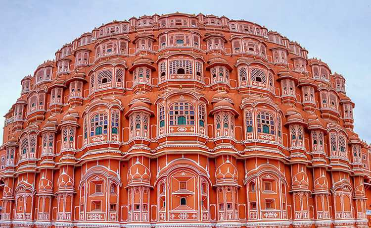
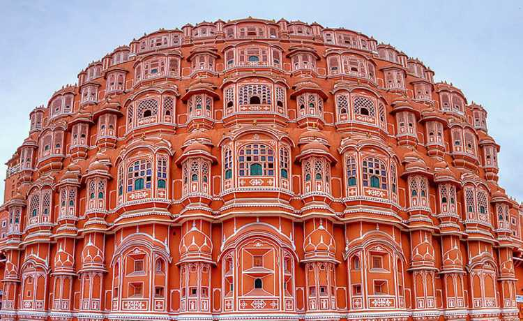
City Palace

Jantar Mantar

Nahargarh Fort
History Of Jaipur
The history of Jaipur is immersed in the quest of making it the most protected and powerful capital of its time. The city itself is named after the king who founded it in 1727, Maharaja Jai Singh II; he decided to shift his state?s capital city from Amber to present-day Jaipur due to scarce basic amenities and consistently growing population. He wanted his new capital to be so scientically, culturally, and architecturally accurate that the science and mathematics acionado took help from a Bengali Brahmin scholar Vidyadhar Bhattacharya to construct a Vastu Shastra compliant city over the course of four years. The most advanced and fortied layout of the city was made, with two out of the nine blocks reserved for palaces and administrative buildings and the rest for the public. The reason behind Jaipur being called ?The Pink City? is also an interesting one: The whole city was quite literally dipped in pink paint to welcome the Prince of Wales in 1856 and to continue its otherworldly magical charm, the pink colour is still maintained to this day. Jaipur is, in fact, India?s rst ever planned city, and is therefore rightly translated as the ?City of Victory?.
Nightlife In Jaipur
s stately, sophisticated and regal Jaipur looks at day, it takes up a whole new avatar at night! The nightlife of Jaipur may not be like Goa?s, but it is nonetheless adventurous and fun. If drinking and lounging with friends accompanied by great food and music are your sense of nirvana, then bars and pubs such as Aza, The Grunge Lounge Bar, Bar Palladio, are your stairways to heaven. If you need to blow o some steam by dancing your heart out on the dancing oor, then Jaipur nightlife has got you covered. Blackout, The Dragon Club (T.D.C), The Extreme Discotheque are perfect places to let your wild side show, costing you an approximate average of INR 1500 for two, an aordable price for the amazing vibe they have got to offer!
The history of Jaipur is immersed in the quest of making it the most protected and powerful capital of its time. The city itself is named after the king who founded it in 1727, Maharaja Jai Singh II; he decided to shift his state?s capital city from Amber to present-day Jaipur due to scarce basic amenities and consistently growing population. He wanted his new capital to be so scientically, culturally, and architecturally accurate that the science and mathematics acionado took help from a Bengali Brahmin scholar Vidyadhar Bhattacharya to construct a Vastu Shastra compliant city over the course of four years. The most advanced and fortied layout of the city was made, with two out of the nine blocks reserved for palaces and administrative buildings and the rest for the public. The reason behind Jaipur being called ?The Pink City? is also an interesting one: The whole city was quite literally dipped in pink paint to welcome the Prince of Wales in 1856 and to continue its otherworldly magical charm, the pink colour is still maintained to this day. Jaipur is, in fact, India?s rst ever planned city, and is therefore rightly translated as the ?City of Victory?.
Nightlife In Jaipur
s stately, sophisticated and regal Jaipur looks at day, it takes up a whole new avatar at night! The nightlife of Jaipur may not be like Goa?s, but it is nonetheless adventurous and fun. If drinking and lounging with friends accompanied by great food and music are your sense of nirvana, then bars and pubs such as Aza, The Grunge Lounge Bar, Bar Palladio, are your stairways to heaven. If you need to blow o some steam by dancing your heart out on the dancing oor, then Jaipur nightlife has got you covered. Blackout, The Dragon Club (T.D.C), The Extreme Discotheque are perfect places to let your wild side show, costing you an approximate average of INR 1500 for two, an aordable price for the amazing vibe they have got to offer!
Leh-Ladakh India Tourism -- "India's Own Moonland"
A land like no other with superabundance of attractions to visit and phantasmagoric and fabulous landscapes, amazing people and culture, Ladakh is truly a
heaven on Earth.
Bounded by two of the world's mightiest mountain ranges, the Great Himalaya and the Karakoram, it lies athwart two other, the Ladakh range and the Zanskar
range. Ladakh is mystical in all the spheres it covers, from nature, geography, sceneries to the modest cultures that it fosters. Right from gompas to the
sensational momos, the superabundance of attractions to visit makes this city make it heaven on earth. It is said that only in Ladakh can a man sitting in the
sun with his feet in the shade suer from sunstroke and frostbite at the same time.
For those of us living in the constant confusion about the dierence between these twin locations, Leh-Ladakh, here is something that might help you. The state
of Jammu and Kashmir is divided into three parts: Jammu, Kashmir, and Ladakh. Ladakh, further is divided into two districts: district Leh, and district Kargil. The
former district has a popular town ?Leh?and is a great tourist attraction because of its beautiful monasteries, picturesque locations, and interesting markets
dening the culture of the place.
Thinks To Do
Pangong Lake

Shanti Stupa
Leh Palace

Magnetic Hill

The perfect getaway for an adventure ride!
For someone who thrives on adventure and lives his life on the edge, Ladakh is their Mecca. There's nothing more satisfying than traversing such high peaks with nothing but daunting yet majestic snow clad mountains in the backdrop. Every minute you spend here becomes a memory. From bike riders to cycling enthusiasts, this is the place to test your endurance and skill. For those who aren't afraid of the water, do not miss the river rafting in Zanskar river at the conuence of Indus and Zanskar. The price per person is around INR 1000 for the long-distance rafting. This is an absolutely unforgettable experience for people who seek thrills. The largest city in this region is Leh and although this city has many monasteries, visit nearby cities like Nubra Valley, Pulu for magnicent views of the scenic beauty. Visit one of the highest motorable roads in the world- Khardung La while on your journey to the Nubra Valley.
Innerline Permits
Permits are required (also for Indian Nationals) to travel the inner line areas of Nubra Valley, the Durbuk Block, Khardung La, Dha-hanu, Tso-Moriri and Tsokar Lakes and Pangong Lake. These are available in the Leh town and you are advised to get them from trusted travel agents. Take the photocopies of the Protected Area Permit (PAP) or Restricted Area Permit (RAP) with you wherever you go in Ladakh. Government authorities have launched a web portal http://lahdclehpermit.in/ on June 1, 2017, making it easier for the travellers to obtain a permit. A fee of INR 400 + INR 20 per day as an Inner line fee is applicable. Note: There is no online payment option on this portal. Take the printout of the permit and visit TIC Oce, Opposite J&K Bank, Main Market, Leh. You can get permit signed and stamped there. The timings of the oce are 9.00 AM to 03:00 PM.
For someone who thrives on adventure and lives his life on the edge, Ladakh is their Mecca. There's nothing more satisfying than traversing such high peaks with nothing but daunting yet majestic snow clad mountains in the backdrop. Every minute you spend here becomes a memory. From bike riders to cycling enthusiasts, this is the place to test your endurance and skill. For those who aren't afraid of the water, do not miss the river rafting in Zanskar river at the conuence of Indus and Zanskar. The price per person is around INR 1000 for the long-distance rafting. This is an absolutely unforgettable experience for people who seek thrills. The largest city in this region is Leh and although this city has many monasteries, visit nearby cities like Nubra Valley, Pulu for magnicent views of the scenic beauty. Visit one of the highest motorable roads in the world- Khardung La while on your journey to the Nubra Valley.
Innerline Permits
Permits are required (also for Indian Nationals) to travel the inner line areas of Nubra Valley, the Durbuk Block, Khardung La, Dha-hanu, Tso-Moriri and Tsokar Lakes and Pangong Lake. These are available in the Leh town and you are advised to get them from trusted travel agents. Take the photocopies of the Protected Area Permit (PAP) or Restricted Area Permit (RAP) with you wherever you go in Ladakh. Government authorities have launched a web portal http://lahdclehpermit.in/ on June 1, 2017, making it easier for the travellers to obtain a permit. A fee of INR 400 + INR 20 per day as an Inner line fee is applicable. Note: There is no online payment option on this portal. Take the printout of the permit and visit TIC Oce, Opposite J&K Bank, Main Market, Leh. You can get permit signed and stamped there. The timings of the oce are 9.00 AM to 03:00 PM.
Manali Tourism -- "Lover's Paradise - India's Honeymoon capital"
Situated at a height of 6260 feet above sea level, Manali is one of the most popular, beautiful and awe-inspiring hill stations in this country. A valley located in the
Kullu district of Himachal Pradesh, Manali overwhelms its visitors by owering apple trees and adventurous snow covered roads.
Surrounded by majestic hills and woody forests, the quaint charm of Manali has captured the world's attention and has become one of the most visited tourist
destinations in India. The pristine River Beas ows right through the town, creating a mesmerising and spellbinding landscape. Nestled at one end of the KulluValley, Manali is a popular hill station with attractions such as the Rohtang Pass
and Solang Valley nearby. Rohtang Pass is covered with snow throughout the year and is a good experience in itself. This is the ideal place for tourists
looking to unwind and rejuvenate in the lap of nature, for there is no place in the country more vibrant and charming as Manali.
Thinks To Do
Solang Valley

Rohtang Pass

Hadimba Temple
Paragliding in Manali

Nightlife in Manali
After reading through the rocky Himalayas all day, Manali oers some of the best ways to enjoy a tranquil nightlife. From the relaxing aromas of Cafes to groovy Bars and Lounges, this beautiful hill station is full of vigour and energy. Dine, party and enjoy away the night time with your friends in exotic stations such as Johnson's bar and restaurant or Zing Zing Bar. If you want to spend some downtime with your partner in low laid Discotheques, The Chelsea club and Buzz are some of the top choices. The local markets and sidewalks are also excellent spots for catching a glimpse of traditional night routines of locals, stargazing around the circuit street parks is also a serenading experience.
Restaurants and Local Food in Manali
Manali is a hill station glittering with amazing restaurants, cafes and bars, that an take care of any need, desires or cravings that its visitors may have. You will nd countless restaurants with a rich variety and some of the most delicious food on their menus. You can nd Italian, Chinese, Korean, Continental, Indian, Japanese, Thai, Vietnamese cuisines here along with the popular Tibetan Momos The cafes with a parallel culture of their own, cater to younger crowds. These cafes serve pizzas, momos, banana pancakes and apple pies throughout the day and you can also try Yak's cheese here. Along with these do relish the street food there with Samosas, Aloo tikki, Bread Pakoras, Paav Bhaji, Gulab Jamun and more lling the streets with colors and fragrances. Other than these, the city has an equally rich platter of local Himachal food.
After reading through the rocky Himalayas all day, Manali oers some of the best ways to enjoy a tranquil nightlife. From the relaxing aromas of Cafes to groovy Bars and Lounges, this beautiful hill station is full of vigour and energy. Dine, party and enjoy away the night time with your friends in exotic stations such as Johnson's bar and restaurant or Zing Zing Bar. If you want to spend some downtime with your partner in low laid Discotheques, The Chelsea club and Buzz are some of the top choices. The local markets and sidewalks are also excellent spots for catching a glimpse of traditional night routines of locals, stargazing around the circuit street parks is also a serenading experience.
Restaurants and Local Food in Manali
Manali is a hill station glittering with amazing restaurants, cafes and bars, that an take care of any need, desires or cravings that its visitors may have. You will nd countless restaurants with a rich variety and some of the most delicious food on their menus. You can nd Italian, Chinese, Korean, Continental, Indian, Japanese, Thai, Vietnamese cuisines here along with the popular Tibetan Momos The cafes with a parallel culture of their own, cater to younger crowds. These cafes serve pizzas, momos, banana pancakes and apple pies throughout the day and you can also try Yak's cheese here. Along with these do relish the street food there with Samosas, Aloo tikki, Bread Pakoras, Paav Bhaji, Gulab Jamun and more lling the streets with colors and fragrances. Other than these, the city has an equally rich platter of local Himachal food.
Nainital Tourism -- "Misty lakes and mountains"
Nainital with its beautiful lakes, temples and exotic scenery around is the perfect honeymoon paradise nestled in the arms of Kumaon Hills with an air which is
refreshing and carries a subtle charm.
Blessed with its own scenic lake, Nainital is a hill station surrounded by the peaks of Kumaon Hills and is full of
natural hot water springs. Nainital is divided into two parts, Tallital and Mallital, with the lake separating them. Tallital is the southern side of the lake, while
Mallital consists of the northern upper reaches. It is also known as the Lake District of Uttarakhand and is named after Goddess Naina Devi. This honeymoon
paradise nestled in the arms of Kumaon Hills is believed to have the blessings of Lord Shiva. Some popular engagements around Nainital are its lake, trekking,
yatching, and horse-riding
Thinks To Do
Naini Lake
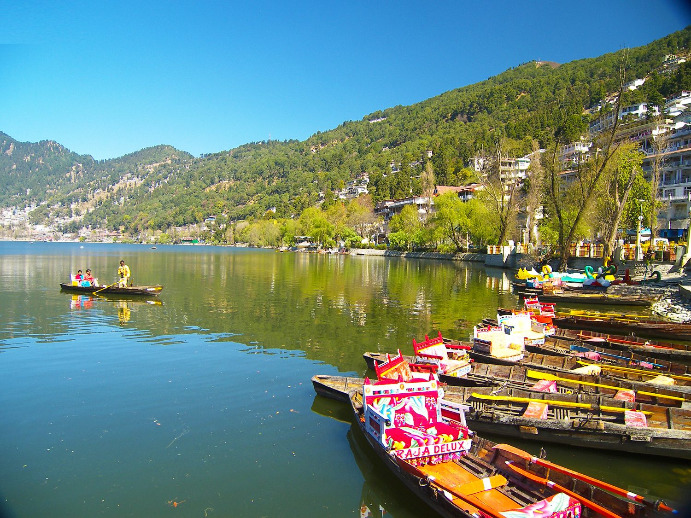
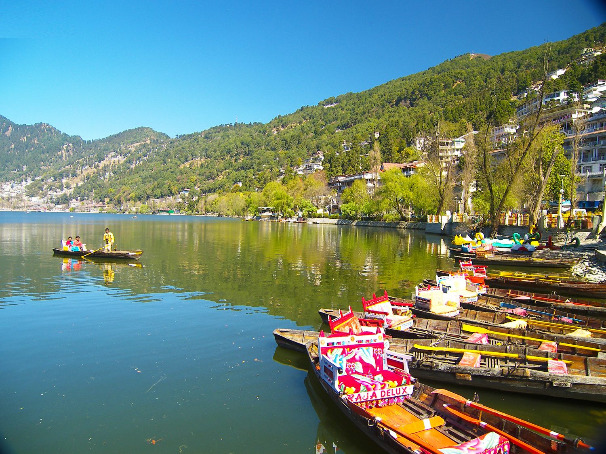
Naina Devi Temple

Snow View Point

Eco Cave Gardens

City of Lakes
Known as the 'Lake District of India', Nainital is a tourist attraction for both adventurers and seekers. Famous for its lakes and its picturesque location, Nainital is the perfect summer retreat for those wishing to escape the unbearable summers of north India. Besides being a tourist hotspot, Nainital is also famous for its education, be it St. Joseph's College, or Birla Vidya Mandir, or even the renowned Sherwood College, famous for giving illustrious celebrities like Amitabh Bachchan, Kabir Bedi, Manish Pandey, Majo Nath Sharma, and Field Marshal Sam Manekshaw.
Trekking/Hiking in Nainital
The rocky landscape of Nainital makes it a home for some of the most energised adventure sports among which trekking is a popular choice for travellers. The Lake district of Uttarakhand is at a normal elevation of 1,938 meters which provides trekkers with the best experience of thrilling climb and peace in the midst of green woods. Naina Peak is one of the most preferred treks which oers a six to seven hours of rigorous trekking experience and an achieving height of 2611 meters. The striking foot trail is surrounded by think confers and is a beloved place by birdwatchers. The location is a home for various bird species such as Sunbirds and Himalayan Grion Vultures. One can enjoy the bliss of natural serenity after completing the thrilling climb to Naina peak. Another popular spot is the Tin Top Trek, a short trek with spectacular action and luxurious natural experience. It is a 3-kilometre trail that is often started early morning for the tourists so that they can enjoy the campre on the base at dusk. The SNow View and Camel?s back trekking circuit are other popular options to indulge in the tranquil air of Nainital.
Known as the 'Lake District of India', Nainital is a tourist attraction for both adventurers and seekers. Famous for its lakes and its picturesque location, Nainital is the perfect summer retreat for those wishing to escape the unbearable summers of north India. Besides being a tourist hotspot, Nainital is also famous for its education, be it St. Joseph's College, or Birla Vidya Mandir, or even the renowned Sherwood College, famous for giving illustrious celebrities like Amitabh Bachchan, Kabir Bedi, Manish Pandey, Majo Nath Sharma, and Field Marshal Sam Manekshaw.
Trekking/Hiking in Nainital
The rocky landscape of Nainital makes it a home for some of the most energised adventure sports among which trekking is a popular choice for travellers. The Lake district of Uttarakhand is at a normal elevation of 1,938 meters which provides trekkers with the best experience of thrilling climb and peace in the midst of green woods. Naina Peak is one of the most preferred treks which oers a six to seven hours of rigorous trekking experience and an achieving height of 2611 meters. The striking foot trail is surrounded by think confers and is a beloved place by birdwatchers. The location is a home for various bird species such as Sunbirds and Himalayan Grion Vultures. One can enjoy the bliss of natural serenity after completing the thrilling climb to Naina peak. Another popular spot is the Tin Top Trek, a short trek with spectacular action and luxurious natural experience. It is a 3-kilometre trail that is often started early morning for the tourists so that they can enjoy the campre on the base at dusk. The SNow View and Camel?s back trekking circuit are other popular options to indulge in the tranquil air of Nainital.
Srinagar Tourism -- "The Paradise on Earth"
Sheltered by the snowy White Mountains, Srinagar is the summer capital of Jammu and Kashmir. The heady combination of natural beauty, charming people and
delightful living attracts salivating intrepid tourists from all around the world. The crown of Kashmir valley situated on the banks of Jhelum River oers bliss and
serenity to its travellers. Boating in Dal Lake, spending leisure days in houseboats and devouring into hot and mouth-watering delicacies is an experience that no
place else will serve you better.
With deep and mesmerising valleys cascaded in sky-scraping mountains and evergreen beauty, this heaven on Earth leaves you absolutely mesmerised. Right
from Chashm-E-Shahi to the exotic Shalimar garden, Srinagar oers
bountiful of places to visit. Surrounded by mountains for the adventurous lot to lakes for photoholics to shopping markets for the spendthrifts, Srinagar does
not disappoint anyone.
Thinks To Do
Dal Lake

Mughal Gardens

Char Chinnar

Shikara Ride
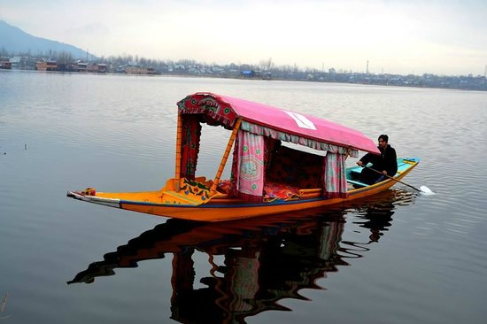
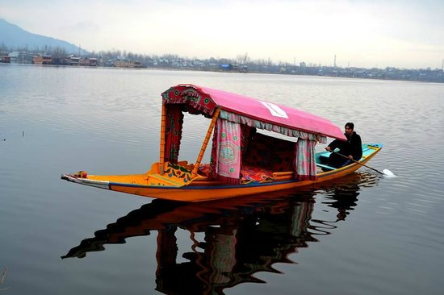
History Of Srinagar
The name Srinagar originated from two Sanskrit words ? ?Sri? meaning wealth and ?Nagar? which means city. Prehistoric people used to refer Srinagar as ?Siri ? nagar? which was a local alteration of ?Surya ? nagar? or City of Sun. King Pravarasena II found this city 2000 years ago, formerly named Parvasenpur. Soon it became a part of the Mughal Empire, one of the largest Empires on India at that time. After the disintegration of Mughals, Srinagar was under the control of Durranis who ruled for several decades on the valley. In 1947, the struggle to gain dominance over Srinagar started between India and Pakistan. This led to the beginning of the Indo ? Pak War. United Nations started cease re on the situation due to which some parts of Kashmir went into the territory which is now called ?Azad Kashmir?. The rest of the territory is an integral part of India and tells its story through the glorious beauty of its land to all the travellers.
Culture of Srinagar
Most of the people are lured by the elegant lifestyle of the city, medieval ? looking backstreets and glistering white Himalayan villages. The multiple cultures and rich heritages have emerged from the Indo ? Aryan Civilization from years ago, bearing the cultural aspects of Islam this place which can be seen in their food, traditions and lifestyle. The people are great craftsmen who practice many of the lost art forms in the world. Most of the population constitutes of Hindus and Muslims, as common languages spoken are Koshur, Kashmiri and Hindi. Women wear colourful sweater made dresses and men wear gurgabi. Religion in Srinagar is very diverse, Hinduism, Islam and Buddhism are commonly followed by the people. Muslims are divided into two major groups ? Shyias and Sunnis. These cultural dierences have majorly contributed towards the multicultural lifestyle adopted by the people today
The name Srinagar originated from two Sanskrit words ? ?Sri? meaning wealth and ?Nagar? which means city. Prehistoric people used to refer Srinagar as ?Siri ? nagar? which was a local alteration of ?Surya ? nagar? or City of Sun. King Pravarasena II found this city 2000 years ago, formerly named Parvasenpur. Soon it became a part of the Mughal Empire, one of the largest Empires on India at that time. After the disintegration of Mughals, Srinagar was under the control of Durranis who ruled for several decades on the valley. In 1947, the struggle to gain dominance over Srinagar started between India and Pakistan. This led to the beginning of the Indo ? Pak War. United Nations started cease re on the situation due to which some parts of Kashmir went into the territory which is now called ?Azad Kashmir?. The rest of the territory is an integral part of India and tells its story through the glorious beauty of its land to all the travellers.
Culture of Srinagar
Most of the people are lured by the elegant lifestyle of the city, medieval ? looking backstreets and glistering white Himalayan villages. The multiple cultures and rich heritages have emerged from the Indo ? Aryan Civilization from years ago, bearing the cultural aspects of Islam this place which can be seen in their food, traditions and lifestyle. The people are great craftsmen who practice many of the lost art forms in the world. Most of the population constitutes of Hindus and Muslims, as common languages spoken are Koshur, Kashmiri and Hindi. Women wear colourful sweater made dresses and men wear gurgabi. Religion in Srinagar is very diverse, Hinduism, Islam and Buddhism are commonly followed by the people. Muslims are divided into two major groups ? Shyias and Sunnis. These cultural dierences have majorly contributed towards the multicultural lifestyle adopted by the people today
Mahabaleshwar Tourism -- "The land ofStrawberries"
A hill town in Western Ghats, apart from its strawberries, Mahabaleshwar is also well known for its numerous rivers, magnicent cascades and majestic peaks.
Mahabaleshwar is a hill station located in the Western Ghats, in Satara district of Maharashtra. Known for its captivating beauty and the beautiful strawberry
farms, the city comprises of ancient temples, boarding schools, manicured and lush green dense forest, waterfalls, hills, valleys. The city is denitely among the
most sought after weekend getaways from Mumbai. Charming views, enticing valleys, serene lakes and a refreshing delight for your taste buds - the best way to
summarize this natures gift.
Thinks To Do
Elephant's Head Point
Panchgani
Veena Lake
Chinaman's Falls

A Perfect Weekend Getaway
Mahabaleshwar is based on the arms of the ranges of the Sahyadri mountains. Mahabaleshwar has one of the rarely found evergreen forests in India. Malcolm Peth, Old Kshetra Mahabaleshwar and a region of the Shindola village are the three villages of halves that make up Mahabaleshwar. It is based at the distance of about one hundred and kilometres south-west to Pune and the distance of two hundred and eighty-ve kilometres from Mumbai. Valleys surround it in every direction. Mahabaleshwar is ver well renowned for its strawberry cultivation. Mapro Gardens, located at the distance of twelve kilometres from Mahabaleshwar, is also well recognised for its variety of delicious food. History of Mahabaleshwar
Mahabaleshwar, to its acclaim has a rich history of many-a-dynasty setting their base and capital here and waging wars against others in order to defeat the region. Starting from King Singhan who was the rst to build a small temple and water tank here, the story then goes on to a Brahmin Dynasty who became the rulers of Mahabaleshwar, before they were defeated by the Maratha family of Chandarao More. In the 17th Century, Shivaji Maharaj reclaimed Mahabaleshwar and built the famous Pratapgarh Fort here. The onset of the 19th Century, saw this land pass on through a succession of British lords and ocials, who brought strawberry plants from Australia and planted them in Panchgani and Mahabaleshwar. Today, these strawberries are exported to various countries.
Strawberry Farming in Mahabaleshwar
Mahabaleshwar is known to be the hub of berry farming in India, so much so that it is said to account for 85% of all the strawberry production in the country! There are a number of strawberry farms right on the Panchgani-Mahabaleshwar Road with plantations that of other berries too like raspberries, mulberries and blueberries. Tourists can drop by in any one of these farms, and walk around the elds with the permission of the owners who may also make one try out these mouth-watering and farm fresh berries. However, if you?re amongst the lucky ones, you may even get to take home with you a big jar of special homemade strawberry jam, made with farm goodness and lots of love! The Mapro Strawberry festival starts in March-April every year. However fresh strawberries sale starts from December and best time to visit is January.
Mahabaleshwar is based on the arms of the ranges of the Sahyadri mountains. Mahabaleshwar has one of the rarely found evergreen forests in India. Malcolm Peth, Old Kshetra Mahabaleshwar and a region of the Shindola village are the three villages of halves that make up Mahabaleshwar. It is based at the distance of about one hundred and kilometres south-west to Pune and the distance of two hundred and eighty-ve kilometres from Mumbai. Valleys surround it in every direction. Mahabaleshwar is ver well renowned for its strawberry cultivation. Mapro Gardens, located at the distance of twelve kilometres from Mahabaleshwar, is also well recognised for its variety of delicious food. History of Mahabaleshwar
Mahabaleshwar, to its acclaim has a rich history of many-a-dynasty setting their base and capital here and waging wars against others in order to defeat the region. Starting from King Singhan who was the rst to build a small temple and water tank here, the story then goes on to a Brahmin Dynasty who became the rulers of Mahabaleshwar, before they were defeated by the Maratha family of Chandarao More. In the 17th Century, Shivaji Maharaj reclaimed Mahabaleshwar and built the famous Pratapgarh Fort here. The onset of the 19th Century, saw this land pass on through a succession of British lords and ocials, who brought strawberry plants from Australia and planted them in Panchgani and Mahabaleshwar. Today, these strawberries are exported to various countries.
Strawberry Farming in Mahabaleshwar
Mahabaleshwar is known to be the hub of berry farming in India, so much so that it is said to account for 85% of all the strawberry production in the country! There are a number of strawberry farms right on the Panchgani-Mahabaleshwar Road with plantations that of other berries too like raspberries, mulberries and blueberries. Tourists can drop by in any one of these farms, and walk around the elds with the permission of the owners who may also make one try out these mouth-watering and farm fresh berries. However, if you?re amongst the lucky ones, you may even get to take home with you a big jar of special homemade strawberry jam, made with farm goodness and lots of love! The Mapro Strawberry festival starts in March-April every year. However fresh strawberries sale starts from December and best time to visit is January.
Ajanta Ellora Caves Tourism -- "The World Heritage Caves"
Ajanta and Ellora caves are considered to be one of the most important tourist destinations in the world owing to the magnicent paintings of Ajanta and wellcarved sculptures of Ellora. The rock-cut caves containing carvings are the nest example of Indian paintings and sculpture.
For those who love to travel the past to get a panorama of life in ancient India, Ajanta (https://www.holidify.com/places/ajanta-and-ellora-caves/ajanta-cavessightseeing-4020.html) and Ellora caves by the river Waghora, are the best sites to visit. Adorned with beautiful sculptures, paintings and frescoes Ajanta and
Ellora caves are an amalgamation of Buddhist, Jain and Hindu monuments as the complex includes both Buddhist monasteries as well as Hindu and Jain
temples. They are the queen of Sahyadri hills buried by thick forests all around. The greenery that surrounds the caves keeps the atmosphere pleasant and
fresh. This visit will induce a sense of discovery, a discovery of the self, and of the divine.
worth it.
Thinks To Do
Ajanta Caves

Kailasanatha Temple
Bibi Ka Makbara
Grisheshwar Temple,Ellora
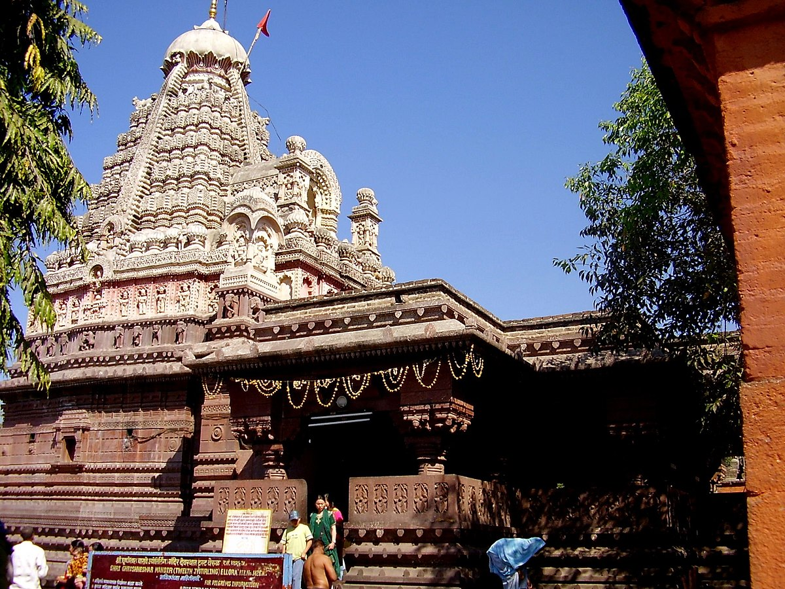
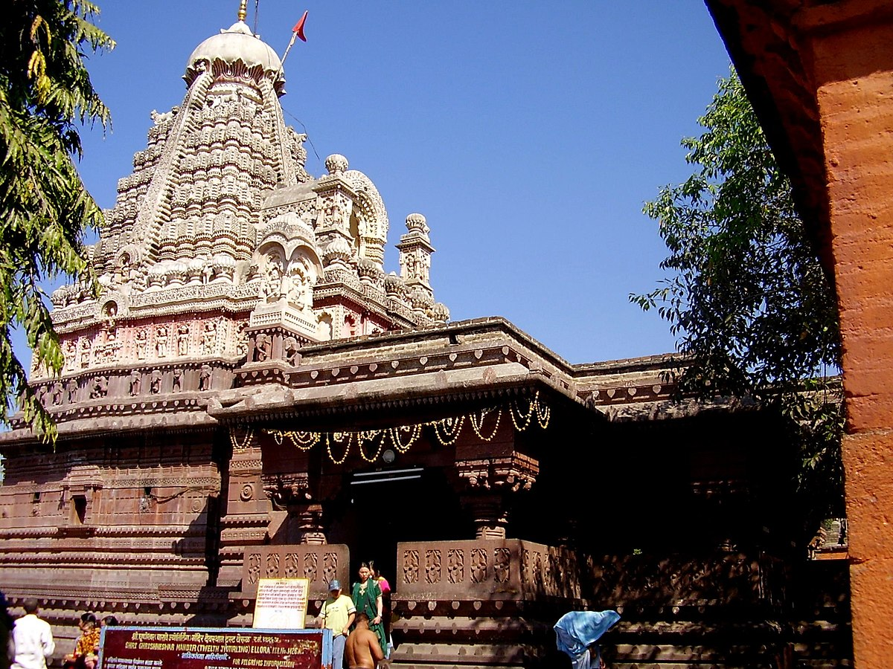
One Day Itinerary
To explore both Ajanta and Ellora caves in one day, which is quite challenging and unfeasible, start early in the morning and visit Ajanta caves in the rst half of the day and keep the other half of the day for Ellora caves. There is a luxury bus tour departing daily (except Tuesdays) at 9:30 AM from the MTDC oce on Railway Station Road. In addition to Ellora, the tour also includes several famous sites in Aurangabad.
A walk through the history
The paintings and sculptures dating back to the beginning of the era of classical Indian art. They are sought to be one of the most beautiful caves in India. The mesmerising charm of the caves takes us back to 2nd Century BC and 6th Century AD. They are a marvellous piece of art in Indian history. Ajanta caves comprise of 30 rock-cut Buddhist cave monuments. The caves portray the Buddhist culture and stories expressed in the form of numerous sculpture and paintings. They also relate to the popular Jataka Tales. The basic design and layout of the caves are called Chaityagrihas and Viharas. Ellora is one of the largest rock-cut monastery temple caves. It has the largest single monolithic rock-cut temple in the world, popularly knows as the Kailash temple. The 12 large caves mainly comprise of Viharas (monasteries). It constitutes of various shrines of Budha of Bodhisattva Saints. The most famous cave is called the Chaitya Hall or Carpenter's Cave. In the centre of this cave is a massive 15 feet tall Budha Statue. Visiting Ajanta and Ellora is like travelling back in time. It will leave you spellbound.
To explore both Ajanta and Ellora caves in one day, which is quite challenging and unfeasible, start early in the morning and visit Ajanta caves in the rst half of the day and keep the other half of the day for Ellora caves. There is a luxury bus tour departing daily (except Tuesdays) at 9:30 AM from the MTDC oce on Railway Station Road. In addition to Ellora, the tour also includes several famous sites in Aurangabad.
A walk through the history
The paintings and sculptures dating back to the beginning of the era of classical Indian art. They are sought to be one of the most beautiful caves in India. The mesmerising charm of the caves takes us back to 2nd Century BC and 6th Century AD. They are a marvellous piece of art in Indian history. Ajanta caves comprise of 30 rock-cut Buddhist cave monuments. The caves portray the Buddhist culture and stories expressed in the form of numerous sculpture and paintings. They also relate to the popular Jataka Tales. The basic design and layout of the caves are called Chaityagrihas and Viharas. Ellora is one of the largest rock-cut monastery temple caves. It has the largest single monolithic rock-cut temple in the world, popularly knows as the Kailash temple. The 12 large caves mainly comprise of Viharas (monasteries). It constitutes of various shrines of Budha of Bodhisattva Saints. The most famous cave is called the Chaitya Hall or Carpenter's Cave. In the centre of this cave is a massive 15 feet tall Budha Statue. Visiting Ajanta and Ellora is like travelling back in time. It will leave you spellbound.
Kutch Tourism -- "The White DesertofIndia"
Virtually an island that resembles the shape of a tortoise, Kutch is an erstwhile princely state of India holding onto its grandeur nature from the past.
Kutch is probably one of the most beautiful, yet surreal places in India. With the vast expanses of white salt desert in the Rann of Kutch area, this is an amazing
experience to witness. One would be able to see just stretches of pure white land as far as the eyesight goes. The place comes to life during the winters when
the Rann Festival is held during December-February everywhere in which there are huge camp settlements with cultural programs, functions and adventure
activities like hot-air ballooning. Kutch is also among the largest district of India with a terribly low population density. Also, Kutch lies on the India-Pakistan
border and you can see parts of Pakistan from Kutch. Kutch is also famous for crafts and embroidery works, Flamingo Sanctuary and Wild Ass Sanctuary. Bhuj
is an ideal starting point to visit the Rann of Kutch. Beautiful beaches of Mandvi near Bhuj are also totally worth visiting during your trip to Kutch. Don't miss to
see the ancient town of Dholavira.
Thinks To Do
Great Rann of Kutch

Kutch Desert Wildlife Sanctuary
Dholavira
Kutch Museum
History of Kutch
The history of Kutch dates back to prehistoric times. There have been traces found, of its existence, in the Indus Valley sites. Alexander mentioned the town in his early writings. It was ruled by the Greeks before it nally fell in the hands of the Mauryan Empire. For the next few centuries, Kutch was ruled by a number of dynasties including Western Satraps, Guptas, Chavdas, Chalukyas and the Jadega brothers. The ancestors of the last ruler Rayadhan II, also found Kathiawar. In 1819, owing to a defeat in a battle, Kutch came under the jurisdiction of the British. When India attained independence, Kutch became a ?dominion of India? and was declared a separate state 1950. In 1956, it was merged with Bombay state. Finally, when the two states of Maharashtra and Gujarat were formed in 1960, Kutch came to be a part of the latter.
Just run in the Great White Rann!
The Great Rann of Kutch is a seasonal salt marsh located in the Thar Desert in the Kutch District of Gujarat. The area is special for its spectacular views at full moon nights when the moonlight shines brightly on the salt crystals formed on the marsh. A trip to this place would be a leisure trip where you can relax from all your stress and enjoy the delicacies at certain resorts. Although there is only the White Rann desert to see at this place, travelers can visit other places of interest like the Kala Dungar and Gandhi-nu-gaam for shopping and leisure. Tourists can also enjoy Golf Cart, ATV Ride, Camel Cart Excursion, Paramotoring, Meditation, Yoga and Gujarati Culture at select resorts in the tent city. The Gujarat tourism arranges a Rann Utsav every year for tourists to visit the place.
The history of Kutch dates back to prehistoric times. There have been traces found, of its existence, in the Indus Valley sites. Alexander mentioned the town in his early writings. It was ruled by the Greeks before it nally fell in the hands of the Mauryan Empire. For the next few centuries, Kutch was ruled by a number of dynasties including Western Satraps, Guptas, Chavdas, Chalukyas and the Jadega brothers. The ancestors of the last ruler Rayadhan II, also found Kathiawar. In 1819, owing to a defeat in a battle, Kutch came under the jurisdiction of the British. When India attained independence, Kutch became a ?dominion of India? and was declared a separate state 1950. In 1956, it was merged with Bombay state. Finally, when the two states of Maharashtra and Gujarat were formed in 1960, Kutch came to be a part of the latter.
Just run in the Great White Rann!
The Great Rann of Kutch is a seasonal salt marsh located in the Thar Desert in the Kutch District of Gujarat. The area is special for its spectacular views at full moon nights when the moonlight shines brightly on the salt crystals formed on the marsh. A trip to this place would be a leisure trip where you can relax from all your stress and enjoy the delicacies at certain resorts. Although there is only the White Rann desert to see at this place, travelers can visit other places of interest like the Kala Dungar and Gandhi-nu-gaam for shopping and leisure. Tourists can also enjoy Golf Cart, ATV Ride, Camel Cart Excursion, Paramotoring, Meditation, Yoga and Gujarati Culture at select resorts in the tent city. The Gujarat tourism arranges a Rann Utsav every year for tourists to visit the place.
Mumbai Tourism -- "The City ofDreams"
'The City that Never Sleeps', 'The City of Dreams' and 'The City of Seven Islands' are just a few of the epithets used to describe the wonderful city of Mumbai or
Bombay, as it was known before. Located along the Konkan coast and home to India's lm industry, the capital of Maharashtra and the nancial capital of India is
multi-faceted and provides a lot of exciting experiences. And it demands to be experienced!
The most striking feature about Mumbai is its rich diversity. The rich and the poor, movie stars and daily wage labourers, dazzlingly tall skyscrapers and large
slum areas, grand cosmopolitan malls and local street bazaars all exist side-by-side in this city. The city of Mumbai oers everything to the bustling crowds that
make up its heartbeat - beautiful lakes, beaches, parks and both impressive modern and historically signicant architecture. The old city or the south of
Mumbai has sprawling areas which are great for heritage walks. Marine Drive, popularly known as the "Queen's Necklace" is like a jewel adorning the city sea
face. The Sanjay Gandhi National Park is popular for its lush greenery and serenity. Mumbai is often referred to as India's New York for its impressive skyline.
There are also many famous religious sites in Mumbai, which stand testimony to the city?s historical roots in Hinduism, Christianity as well as Islam. These
include the likes of the Siddhi Vinayak Mandir, Mount Mary Church and the Haji Ali Dargah.
Thinks To Do
Marine Drive
Gateway Of India
Juhu Beach
Haji Ali Dargah

The 'City of Dreams'
Popularly known as the 'Maximum City', Mumbai, apart from being the capital of Maharashtra, is the commercial capital of India, owing to the innite services and industries present here. Besides being home to the largest cinema industry in the world, Mumbai, like Kolkata, has its own distinct culture. If you don't believe it, visit the city during festivals like Diwali, Ganesh Chaturthi, Navaratri etc. and your doubts shall be dispelled for sure. Be it the majestic charm of the colonial heritage, like the Taj Mahal Palace and Tower, or the indigenous beauty of places like Siddhivinayak Mandir, Wankhede Stadium to name a few, Mumbai is one city that never ceases to surprise you. Mumbai is a literal paradise for any foodie, owing to the exquisite range of cuisine, be it the luscious Missal Pav or the lovely Parsi cuisine in some of the heritage cafes. Being the one stop for all the dreams and ambitions in India, Mumbai is aptly called the 'City of Dreams'.
History of Mumbai
The history of the city of Mumbai, or Bombay, began with the signing of the Treaty of Bassein between Sultan Bahadur Shah of Gujarat and the Portuguese, who were oered the seven islands that made up Bombay by the Sultan. The islands were initially referred to by several dierent names, but collectively took the written name of Bombain. The Portuguese built several churches and forts in the city during their reign. With its growing strategic importance as a natural harbour, it attracted repeated British and Dutch interests. In 1661, as part of the royal marriage alliance between Charles II of England and Princess Catherine of Portugal, the islands were given as dowry to the British by the Portuguese. In 1668, the English leased 3 of the islands to the British East India Company, and a few years later, they shifted their capital from Surat to Bombay. Bombay was thus the capital of the Bombay Presidency and quickly gained commercial and military signicance. The Portuguese nally left Bombay in the 1730s, following their defeat to the Marathas under Peshwa Baji Rao. Following the Anglo-Maratha war and the signing of some treaties, the British drove out the Marathas and were able to establish their majoritarian supremacy over Bombay. Under the Hornby Vellard project, the islands were unied through signicant land reclamation activities into a single landmass. Bombay was extremely active in the political sphere during India?s independence struggle and was part of the Quit India Movement & the Royal Navy Mutiny in the 1940s.
Nightlife in Mumbai
While a day in Mumbai is evidently abuzz with activities and the hustle and bustle of the crowds, even the nights here are far from quiet. The city that never sleeps witness the nocturnal souls creep out into the night to take on the city; be it to drown the Monday blues or loosen up on a Saturday night. Undoubtedly, the city with the best nightlife in the country.
Popularly known as the 'Maximum City', Mumbai, apart from being the capital of Maharashtra, is the commercial capital of India, owing to the innite services and industries present here. Besides being home to the largest cinema industry in the world, Mumbai, like Kolkata, has its own distinct culture. If you don't believe it, visit the city during festivals like Diwali, Ganesh Chaturthi, Navaratri etc. and your doubts shall be dispelled for sure. Be it the majestic charm of the colonial heritage, like the Taj Mahal Palace and Tower, or the indigenous beauty of places like Siddhivinayak Mandir, Wankhede Stadium to name a few, Mumbai is one city that never ceases to surprise you. Mumbai is a literal paradise for any foodie, owing to the exquisite range of cuisine, be it the luscious Missal Pav or the lovely Parsi cuisine in some of the heritage cafes. Being the one stop for all the dreams and ambitions in India, Mumbai is aptly called the 'City of Dreams'.
History of Mumbai
The history of the city of Mumbai, or Bombay, began with the signing of the Treaty of Bassein between Sultan Bahadur Shah of Gujarat and the Portuguese, who were oered the seven islands that made up Bombay by the Sultan. The islands were initially referred to by several dierent names, but collectively took the written name of Bombain. The Portuguese built several churches and forts in the city during their reign. With its growing strategic importance as a natural harbour, it attracted repeated British and Dutch interests. In 1661, as part of the royal marriage alliance between Charles II of England and Princess Catherine of Portugal, the islands were given as dowry to the British by the Portuguese. In 1668, the English leased 3 of the islands to the British East India Company, and a few years later, they shifted their capital from Surat to Bombay. Bombay was thus the capital of the Bombay Presidency and quickly gained commercial and military signicance. The Portuguese nally left Bombay in the 1730s, following their defeat to the Marathas under Peshwa Baji Rao. Following the Anglo-Maratha war and the signing of some treaties, the British drove out the Marathas and were able to establish their majoritarian supremacy over Bombay. Under the Hornby Vellard project, the islands were unied through signicant land reclamation activities into a single landmass. Bombay was extremely active in the political sphere during India?s independence struggle and was part of the Quit India Movement & the Royal Navy Mutiny in the 1940s.
Nightlife in Mumbai
While a day in Mumbai is evidently abuzz with activities and the hustle and bustle of the crowds, even the nights here are far from quiet. The city that never sleeps witness the nocturnal souls creep out into the night to take on the city; be it to drown the Monday blues or loosen up on a Saturday night. Undoubtedly, the city with the best nightlife in the country.
Goa Tourism -- "Beaches, Sunsets and Crazy Nights"
Neatly tucked into the Western coast of India, Goa is the state associated most with touristy beaches, a happening nightlife and over 300-year old Portuguese
architecture. Referred to as the city of churches by many, the culture of Goa has the lingering effect of being a Portugal colony. Visibly different from the rest of the country, Goa has
characteristic colourful houses, lush green fields and a soothing languidness in the atmosphere. The charming villages of Goa are ideal for a laidback morning walk or an
aimless evening stroll. North and South regions of the place are strikingly different - the former is a cultural hub with traditional eateries and markets, while the latter
makes for an idyllic vacation with its 5-star hotels, private beaches and a mix of white sand and clear blue water. Under the star-laden skies, each festivity becomes more
alive. Goa greens and wildlife makes for a nature lover's ideal hotspot. If you are a food adventurer, you may want to visit the gorgeous spice gardens and try a glassful of
cashew feni. Goa provides a respite, not just for the tourists on an appointment with nature, it is also the place for crazy parties and a vivacious night-life. The ultimate
tourist destination of India, Goa promises to be something special for all types of travellers.
Thinks To Do
Baga Beach
Basilica of Bom Jesus
Calangate Beach
Anjuna Beach
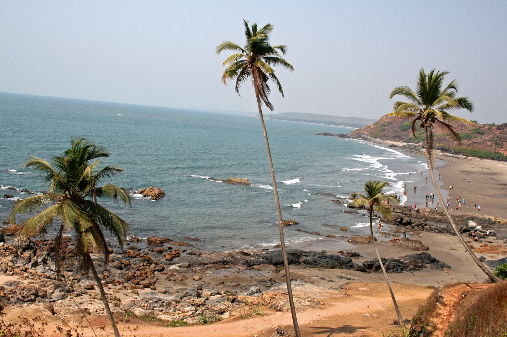
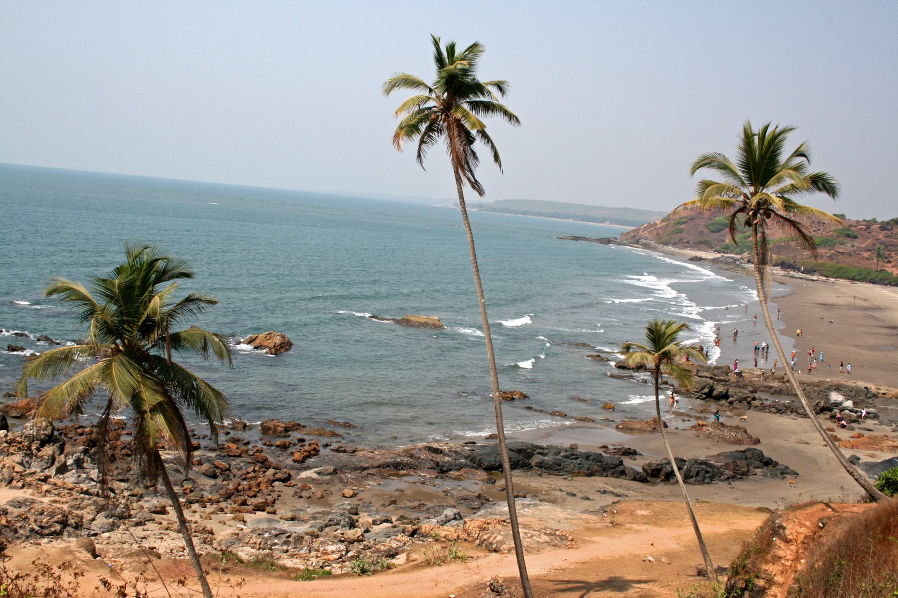
Culture of Goa
Goa is also known as the ?Rome of the East? and is graced by travellers throughout the world. This place is considered to be one of the most westernized states in India. The people natives of this place are known as ?Goans? and the language spoken here is Konkani. The Konkani dialect is inuenced greatly by the Portuguese vocabulary as Goa was a former Portuguese colony. The Portuguese inuence also shows greatly in the architecture that exists in Goa today. As this state was reined by many ethnicities throughout its history, traditions and festivals from all religions are respected and celebrated. New Years in Goa is a big thing and are celebrated on a huge scale.
History Of Goa
Goa, in the Hindu Scriptures, has been named as Gomanta which means the region of cows. It is believed that Parashurama, the sixth reincarnation of Lord Vishnu was the creator of the Goan region. A legend says that he along with ten sages had performed re sacrices in the lands of Goa. The gist of Sanskritisation in Goa's culture is said to be originated with the settlement of Parashurama and the sages from North following whom the people of Goa carry Brahminical hegemony. Walking down the lane of its History we come across another legend according to which Goa is considered sacred for its spiritually cleansing touch. Read more about History Of Goa.
Beaches Of Goa
Goa beaches are famous across the country and it is the place associated most with beautiful beaches and with so many of these out there, read this guide (Goa beaches are famous across the country and it is the place associated most with beautiful beaches and with so many of these out there, we help you get down to the 35 best beaches in Goa) to get down to the 35 best beaches in Goa!.
Goa is also known as the ?Rome of the East? and is graced by travellers throughout the world. This place is considered to be one of the most westernized states in India. The people natives of this place are known as ?Goans? and the language spoken here is Konkani. The Konkani dialect is inuenced greatly by the Portuguese vocabulary as Goa was a former Portuguese colony. The Portuguese inuence also shows greatly in the architecture that exists in Goa today. As this state was reined by many ethnicities throughout its history, traditions and festivals from all religions are respected and celebrated. New Years in Goa is a big thing and are celebrated on a huge scale.
History Of Goa
Goa, in the Hindu Scriptures, has been named as Gomanta which means the region of cows. It is believed that Parashurama, the sixth reincarnation of Lord Vishnu was the creator of the Goan region. A legend says that he along with ten sages had performed re sacrices in the lands of Goa. The gist of Sanskritisation in Goa's culture is said to be originated with the settlement of Parashurama and the sages from North following whom the people of Goa carry Brahminical hegemony. Walking down the lane of its History we come across another legend according to which Goa is considered sacred for its spiritually cleansing touch. Read more about History Of Goa.
Beaches Of Goa
Goa beaches are famous across the country and it is the place associated most with beautiful beaches and with so many of these out there, read this guide (Goa beaches are famous across the country and it is the place associated most with beautiful beaches and with so many of these out there, we help you get down to the 35 best beaches in Goa) to get down to the 35 best beaches in Goa!.
Andaman And Nicobar Islands Tourism -- "Blue seas, virgin islands and colonial past"
A group of about 600 islands in the Bay of Bengal, Andaman and Nicobar Islands are known for their scenic beaches, dense forests and adventurous water sports.
Located in the Bay of Bengal, Andaman and Nicobar Islands is an archipelago consisting of about 600 islands out of which only around 36 islands are inhabited.
The archipelago is divided into two groups of islands - the Andaman Islands and the Nicobar Islands. Of these, only 9 islands in the Andaman Islands group are
open for tourists. In earlier times, the islands were referred to as Kalapani for their notorious penal settlement. Pristine beaches, gorgeous corals, fascinating
marine life, adventurous water sports and the remain of Stone Age culture draw multitudes of tourists to these islands every year. These islands are covered
with lush forests and endless varieties of exotic ora and fauna. Incredible corals and marine life, crystal clear water and mangrove-lined creeks lure travellers
to these picturesque islands. while the sandy beaches form as nesting homes to turtles, animals such as spotted deer, wild boar, gecko, crab-eating macaque
and python can be spotted in the 86% area still covered by dense forests.
Thinks To Do
Havelock Island
Cellular Jail
Snorkeling In Andaman's
Neil Island
History Of Andaman
Some of the earliest archaeological pieces of evidence suggest that the inhabitation of the islands dates back to 800 BC, which was sometime during the middle Palaeolithic age. The islands were occupied mostly by the tribes called as Andamanese and others including Jharwas, Onges, Shompens and Sentenelese. Initially, the empire was used by the Chola dynasty as a strategic naval base for an expedition against Sriwijiya Empire in Indonesia. Later it became a colony of the Danish, and they named it Danish East India Company. Soon after, the islands were repeatedly abandoned due to outbreaks of epidemics, mostly malaria. Later, the British set up their colony in Port Blair and bought the island from the Danish. Finally, when the British left India, the islands became a part of India in 1950 and were declared a Union Territory in 1956. Indigenious Tribes Of Andaman
The Great Andamanese, Jarawas or Sentalenese are considered the rst people or natives of the Andaman and Nicobar Islands. They inhabit the South Andaman and Middle Andaman Islands and live in groups and are known to be dark-skinned. They have shunned interactions with outside communities and mostly keep to themselves. They have been inhabiting the islands for the last several thousand years. Most of them have now been wiped out by diseases, epidemics and tsunamis and there are approx. Only 400-450 indigenous people are remaining on the islands. They resort to hunting-gathering lifestyle.
Perfect Beach Holiday
Andamans have the most exotic beaches. These are Wandoor beach, Elephant Beach, Sitapur Beach, Bharatpur Beach, Laxmanpur Beach and Radhanagar Beach. Each of these beaches oers a peaceful ambience that would make you want to spend days here. These beaches also give the opportunity of trying out a number of water sports such as Scuba Diving, Snorkeling, Sea Walk etc.
Some of the earliest archaeological pieces of evidence suggest that the inhabitation of the islands dates back to 800 BC, which was sometime during the middle Palaeolithic age. The islands were occupied mostly by the tribes called as Andamanese and others including Jharwas, Onges, Shompens and Sentenelese. Initially, the empire was used by the Chola dynasty as a strategic naval base for an expedition against Sriwijiya Empire in Indonesia. Later it became a colony of the Danish, and they named it Danish East India Company. Soon after, the islands were repeatedly abandoned due to outbreaks of epidemics, mostly malaria. Later, the British set up their colony in Port Blair and bought the island from the Danish. Finally, when the British left India, the islands became a part of India in 1950 and were declared a Union Territory in 1956. Indigenious Tribes Of Andaman
The Great Andamanese, Jarawas or Sentalenese are considered the rst people or natives of the Andaman and Nicobar Islands. They inhabit the South Andaman and Middle Andaman Islands and live in groups and are known to be dark-skinned. They have shunned interactions with outside communities and mostly keep to themselves. They have been inhabiting the islands for the last several thousand years. Most of them have now been wiped out by diseases, epidemics and tsunamis and there are approx. Only 400-450 indigenous people are remaining on the islands. They resort to hunting-gathering lifestyle.
Perfect Beach Holiday
Andamans have the most exotic beaches. These are Wandoor beach, Elephant Beach, Sitapur Beach, Bharatpur Beach, Laxmanpur Beach and Radhanagar Beach. Each of these beaches oers a peaceful ambience that would make you want to spend days here. These beaches also give the opportunity of trying out a number of water sports such as Scuba Diving, Snorkeling, Sea Walk etc.
Hyderabad Tourism -- "The City of Nizams"
A densely populated metropolitan city with people bustling in and out of cafes, oces, temples and even nowhere, Hyderabad is fast turning into the New York
city of South India.Hyderabad, the capital city of Andhra Pradesh and Telangana, is fast becoming the IT hub. Most tourism here is business tourism. The city's boundaries have
been extending far beyond the original city - now called the Old City - to include Secunderabad and new developments in adjacent municipalities. The city has
its fair share of history and culture which now seems to be overtaken by the metro image with the sprawling cafes, malls and corporate buildings. Hyderabad
also provides for a great gastronomical experience for spicy food lovers.
Thinks To Do
Charminar

Ramoji Film City
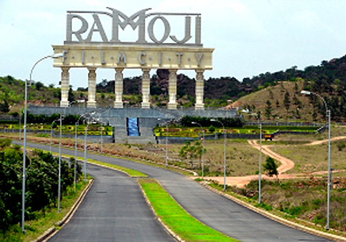
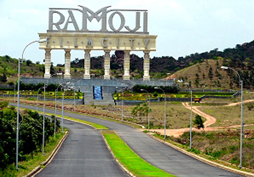
Chowmahalla
Snow World

History of Hyderabad
Hyderabad, one of the largest princely state established by Muhammad Quli Qutb Shah in 1591 has been enriching its historical values and culture ever since. After a century of Qutb Shahi rule Mughal mushroomed their control over this powerful state. History of the city has had an impact on its traditions, practices, food, clothing and language. During the rule of Asaf Jahi, Nizam of Hyderabad, Deccan region along with Hyderabad reached the summit of progress and development in every sense possible. In the beginning, Nizams ruled as a part of Mughals but later on, they split in order to form an independent kingdom. Nizams exercised their control over potent Hyderabad till Indian independence in 1947. Over the years, Hyderabad has established itself as one of the nest amalgamation of ancient and modern history.
Hyderabadi Biryani
Hyderabad is evidently a kernel of the existence of Nizams and their recreational culture. However, it has also been an outset of the mouth-watering and slithering avours of the Hyderabadi cuisine. This mind-blowing cuisine is famous for its traditional ?Biryani?. The dish was originally a delicacy of South Asian Muslims. Since rice is a staple food of south India, a number of dishes are popular in their culture especially in the state of Telangana, Andhra Pradesh, Tamil Nadu and parts of Kerala. Biryani was prepared in the Mughal royalty on special occasions to manifest and embrace their cultural identity. However, to be specic ?Hyderabadi Biryani? has lasted for centuries and is loved by all. Hyderabadi Biryani is served in almost every restaurant you come by. But if you want to please your tummy then visit Paradise. It is one of the most famous biryani joints situated in Secunderabad. In INR 200-300 one can buy a family pack biryani which is sucient for three people. Also, there are 40+ varieties of biryani to choose from. The food, the attire, the people, the traditions and practices altogether forms a culture. Hyderabad is no monotonous place but beholds multiple identities to itself; a thousand reasons to aunt none to hide.
Nightlife in Hyderabad
Hyderabad has an energetic nightlife with plenty of pubs and bars remaining open till the wee hours. The city is capable of delivering you energy so that you can party all night. Like all the major cities in India, Hyderabad oers a hugely diverse collection of clubs and bars. The popular nightspots in Hyderabad are 10 Downing Street, Aqua, MOB, Altitude Lounge Bar, Cuba Libre, The Sky Lounge, Mix - The Westin.and Kismet. Hyderabad does not have many microbreweries as of now, though the craze is catching up in the city. Some of the breweries are Prost Brew Pub, HyLife Brewing Company, Zero40 Brewing, and Over The Moon.
Hyderabad, one of the largest princely state established by Muhammad Quli Qutb Shah in 1591 has been enriching its historical values and culture ever since. After a century of Qutb Shahi rule Mughal mushroomed their control over this powerful state. History of the city has had an impact on its traditions, practices, food, clothing and language. During the rule of Asaf Jahi, Nizam of Hyderabad, Deccan region along with Hyderabad reached the summit of progress and development in every sense possible. In the beginning, Nizams ruled as a part of Mughals but later on, they split in order to form an independent kingdom. Nizams exercised their control over potent Hyderabad till Indian independence in 1947. Over the years, Hyderabad has established itself as one of the nest amalgamation of ancient and modern history.
Hyderabadi Biryani
Hyderabad is evidently a kernel of the existence of Nizams and their recreational culture. However, it has also been an outset of the mouth-watering and slithering avours of the Hyderabadi cuisine. This mind-blowing cuisine is famous for its traditional ?Biryani?. The dish was originally a delicacy of South Asian Muslims. Since rice is a staple food of south India, a number of dishes are popular in their culture especially in the state of Telangana, Andhra Pradesh, Tamil Nadu and parts of Kerala. Biryani was prepared in the Mughal royalty on special occasions to manifest and embrace their cultural identity. However, to be specic ?Hyderabadi Biryani? has lasted for centuries and is loved by all. Hyderabadi Biryani is served in almost every restaurant you come by. But if you want to please your tummy then visit Paradise. It is one of the most famous biryani joints situated in Secunderabad. In INR 200-300 one can buy a family pack biryani which is sucient for three people. Also, there are 40+ varieties of biryani to choose from. The food, the attire, the people, the traditions and practices altogether forms a culture. Hyderabad is no monotonous place but beholds multiple identities to itself; a thousand reasons to aunt none to hide.
Nightlife in Hyderabad
Hyderabad has an energetic nightlife with plenty of pubs and bars remaining open till the wee hours. The city is capable of delivering you energy so that you can party all night. Like all the major cities in India, Hyderabad oers a hugely diverse collection of clubs and bars. The popular nightspots in Hyderabad are 10 Downing Street, Aqua, MOB, Altitude Lounge Bar, Cuba Libre, The Sky Lounge, Mix - The Westin.and Kismet. Hyderabad does not have many microbreweries as of now, though the craze is catching up in the city. Some of the breweries are Prost Brew Pub, HyLife Brewing Company, Zero40 Brewing, and Over The Moon.
Mahabalipuram Tourism
Famous for its intricately carved temples and rock-cut caves, Mamallapuram or Mahabalipuram as it is famously known, is a historically important and well-loved
tourist location situated on the Coromandel Coast along the Bay of Bengal, in the state of Tamil Nadu.
Once the abode of the famous demon king Mahabali, Mahabalipuram was later renamed Mamallapuram. The serenity, the alluring atmosphere and the
impressive setting with many beautiful white sandy beaches dotted with casuarina trees are all reasons as to why one would want to visit this wonderful town.
Some famous tourist spots include the UNESCO world heritage site Group of Monuments like the Shore Temple and the Five Rathas, the Crocodile Bank which
is home to some exquisite species of crocodiles and alligators, and the beach resorts in Kovalam and Sadras.
Thinks To Do
Mahabalipuram Beach
Shore Temple

Five Rathas
Arjuna's Penance
History of Mahabalipuram
Mahabalipuram or Mamallapuram was once a trade city that was established during the Pallava dynasty. It became an important port and was a ourishing and vibrant centre of activity. The Pallavas left behind a treasure-trove of history, architecture and culture in the form of stunning monoliths and rock temples, and sculptures dedicated to the Gods. The history of this town stretches even beyond the 7th & 8th centuries and the Pallava dynasty; settlements belonging to the pre-Sangam era and artefacts that predate the birth of Christ have also been found here. There is thus an air of mystery surrounding Mahabalipuram?s history, with historians being unclear about the exact origins and roots of this popular tourist destination.
Cultural Influence On Architecture In Mahabalipuram
Mahabalipuram is famous for its architectural wonders. These monuments, revering the various Gods and holy scriptures of the Hindu religion, are mainly in the form of temples, rock-cut caves and other stone inscriptions. These monuments are classied into ve major forms - the Rathas or chariot temples, Mandapas or cave temples, rock relief structures, structural temples and excavations. The Rathas are found in the southern part of the town, the most famous being the Panch Rathas, dedicated to the 5 Pandava brothers from the Mahabharata. The Mandapas were historically places for social gatherings to take place. They have excavated caves depicting various intricate carvings from Hindu mythology. Among the temples, the Shore temple located along the sea is the most popular, mainly dedicated to the Lords Shiva and Vishnu. Rock reliefs, as the name suggests, are carved on independent rocks or big stones. The rock relief structure, Descent of the Ganges or Arjuna?s penance, is believed to be one of the largest in the world and is carved on two large boulders 27m long and 9m high.
Mahabalipuram or Mamallapuram was once a trade city that was established during the Pallava dynasty. It became an important port and was a ourishing and vibrant centre of activity. The Pallavas left behind a treasure-trove of history, architecture and culture in the form of stunning monoliths and rock temples, and sculptures dedicated to the Gods. The history of this town stretches even beyond the 7th & 8th centuries and the Pallava dynasty; settlements belonging to the pre-Sangam era and artefacts that predate the birth of Christ have also been found here. There is thus an air of mystery surrounding Mahabalipuram?s history, with historians being unclear about the exact origins and roots of this popular tourist destination.
Cultural Influence On Architecture In Mahabalipuram
Mahabalipuram is famous for its architectural wonders. These monuments, revering the various Gods and holy scriptures of the Hindu religion, are mainly in the form of temples, rock-cut caves and other stone inscriptions. These monuments are classied into ve major forms - the Rathas or chariot temples, Mandapas or cave temples, rock relief structures, structural temples and excavations. The Rathas are found in the southern part of the town, the most famous being the Panch Rathas, dedicated to the 5 Pandava brothers from the Mahabharata. The Mandapas were historically places for social gatherings to take place. They have excavated caves depicting various intricate carvings from Hindu mythology. Among the temples, the Shore temple located along the sea is the most popular, mainly dedicated to the Lords Shiva and Vishnu. Rock reliefs, as the name suggests, are carved on independent rocks or big stones. The rock relief structure, Descent of the Ganges or Arjuna?s penance, is believed to be one of the largest in the world and is carved on two large boulders 27m long and 9m high.
Mysore Tourism -- "A glimpse of Southern India"
The third largest city in Karnataka, Mysore has a royal history, a rich and regal heritage and an important center of art and culture.
Having evolved from 'the royal city' to an upcoming IT hub, Mysore is an amazing mix of the traditional as well as modern attractions. From palaces and ornate
temples to gardens and galleries, there are multiple attractions here to cater to every need. With over 600 years of legacy, Mysore is a amboyant city with
exceptional weather throughout the year. It used to be the centre of commerce for South India earlier and is still one of the most important city for trading, silk,
Ayurveda, yoga, sandalwood and incense. The cafes, bustling markets, Mysore zoo and the magnicent Mysore Palace are not going to let you sit idle
for even a moment here.
Thinks To Do
Mysore Palace
Brindavan Gardens

Chamundeshwari Temple
Karanji Lake

Architecture of Mysore
The architectural style of structures in the Mysore kingdom experienced signicant changes during British rule ? a blending of European conventions with local components. The Hindu temples in the kingdom were constructed in typical South Indian Dravidian style. The city?s main place, the Mysore Palace, was designed by the English architect Henry Irwin in 1897. The design is a combination of Hindu, Islamic, Indo-Saracenic and Moorish styles, which for the rst time in India, used cast iron columns and roof frames. One can also nd architectural designs from the Renaissance period and exhibits concepts English manor houses and Italian palazzos. These styles can be found in the architecture of the Lalitha Mahal Palace that was built in 1921 by E.W. Fritchley under the commission of Maharaja Krishnaraja IV.
Mysore Dasara
Dussehra or Dasara as it is known as in the southern part of India is synonymous with Mysore. It is the most extravagant festival which sees the entire city lighting up and coming alive. Also called Navaratri, this is a 10-day festival that ends with the celebration of Vijayadashami.
City of Palaces
Also known as 'the city of palaces', Mysore houses grand palaces, majestic temples, gardens that mesmerise the tourists. The Mysore Palace, Brindavan Gardens, Tipu Sultan's Summer Palace, Karanji Lake are a few of the many tourist attractions the city offers.
The architectural style of structures in the Mysore kingdom experienced signicant changes during British rule ? a blending of European conventions with local components. The Hindu temples in the kingdom were constructed in typical South Indian Dravidian style. The city?s main place, the Mysore Palace, was designed by the English architect Henry Irwin in 1897. The design is a combination of Hindu, Islamic, Indo-Saracenic and Moorish styles, which for the rst time in India, used cast iron columns and roof frames. One can also nd architectural designs from the Renaissance period and exhibits concepts English manor houses and Italian palazzos. These styles can be found in the architecture of the Lalitha Mahal Palace that was built in 1921 by E.W. Fritchley under the commission of Maharaja Krishnaraja IV.
Mysore Dasara
Dussehra or Dasara as it is known as in the southern part of India is synonymous with Mysore. It is the most extravagant festival which sees the entire city lighting up and coming alive. Also called Navaratri, this is a 10-day festival that ends with the celebration of Vijayadashami.
City of Palaces
Also known as 'the city of palaces', Mysore houses grand palaces, majestic temples, gardens that mesmerise the tourists. The Mysore Palace, Brindavan Gardens, Tipu Sultan's Summer Palace, Karanji Lake are a few of the many tourist attractions the city offers.
Ooty Tourism -- "Queen of the Nilgiris"
Nestled in between misty mountains and cotton clouds, Ooty or Ootakamund is popularly referred to as the "Queen of the hills". The Nilgiris or the "Blue
mountains" are one of the major attractions of the hill station. The striking winding roads, the hill atop gardens and miniature toy train add to the already
mesmerising scenery. On a clear day with bright sunlight, the tinsel town looks as picturesque as a scenery from a colourful children?s book!
It is situated at an altitude of 2, 240 mt above sea level and is thus a delightful honeymoon spot. One can notice a marvelous change in vegetation, as one goes
from Kallar to Coonoor. The establishment of numerous tea estates made Ooty famous. Lofty mountains, dense
forest, sprawling grasslands and miles and miles of tea gardens greet the passengers on most routes.
Thinks To Do
Ooty Lake
Thread Garden
Nilgiri Mountain Railway
Ooty Botanical Gardens
More information about Ooty
Ooty is a place which can be visited throughout the year. Each season in Ooty has something dierent to oer and none of the seasons is too harsh for its visitors. The Nilgiri mountain railway or the Ooty Toy Train is a marvel in itself. The views of the mountains with the touch of weather make the place more likeable. Various adventure sports like Mountain biking and Hand gliding keeps the adrenaline owing inside you and makes you feel the thrill. There are various lakes and gardens in the town to keep you engaged. Apart from the natural sightseeing options, there are other interesting man-made places as well including the Wax World Museum, Tea Museum and the St. Stephen's Church
Flora and Fauna
Ooty is an integral part of the Western Ghats and is one of the most biodiverse regions of the world. To visit Ooty in the month of monsoon, you will nd the forests laden with rare blooming owers. The hill slopes covered with colourful species of plants not likely to be found anywhere else in India. A lot of pharmaceutical plants and herbs with medicinal qualities can also be found here. It also has never-ending tea gardens and grasslands. Another attraction of the hill station is its beautiful pine forests. This dense forest area is also the part where you can nd a large number of exotic wild animals and reptiles, few of which are the elusive panther, the rock python, majestic cobra, and the big cats. Apart from these, a large variety of birds and insects are also found here including the ying squirrel. A quaint little toy town tucked away in the Nilgiris is a slice of a haven for a retreat in nature?s bliss. Ooty boasts of emerald hills, charming pathways, valleys blooming with owers and the blue mountains at a distance. It also maintains its old world charm of serene grandeur and presents a pictureperfect canvas view.
Beaches Of Goa
Goa beaches are famous across the country and it is the place associated most with beautiful beaches and with so many of these out there, read this guide (Goa beaches are famous across the country and it is the place associated most with beautiful beaches and with so many of these out there, we help you get down to the 35 best beaches in Goa) to get down to the 35 best beaches in Goa!.
Ooty is a place which can be visited throughout the year. Each season in Ooty has something dierent to oer and none of the seasons is too harsh for its visitors. The Nilgiri mountain railway or the Ooty Toy Train is a marvel in itself. The views of the mountains with the touch of weather make the place more likeable. Various adventure sports like Mountain biking and Hand gliding keeps the adrenaline owing inside you and makes you feel the thrill. There are various lakes and gardens in the town to keep you engaged. Apart from the natural sightseeing options, there are other interesting man-made places as well including the Wax World Museum, Tea Museum and the St. Stephen's Church
Flora and Fauna
Ooty is an integral part of the Western Ghats and is one of the most biodiverse regions of the world. To visit Ooty in the month of monsoon, you will nd the forests laden with rare blooming owers. The hill slopes covered with colourful species of plants not likely to be found anywhere else in India. A lot of pharmaceutical plants and herbs with medicinal qualities can also be found here. It also has never-ending tea gardens and grasslands. Another attraction of the hill station is its beautiful pine forests. This dense forest area is also the part where you can nd a large number of exotic wild animals and reptiles, few of which are the elusive panther, the rock python, majestic cobra, and the big cats. Apart from these, a large variety of birds and insects are also found here including the ying squirrel. A quaint little toy town tucked away in the Nilgiris is a slice of a haven for a retreat in nature?s bliss. Ooty boasts of emerald hills, charming pathways, valleys blooming with owers and the blue mountains at a distance. It also maintains its old world charm of serene grandeur and presents a pictureperfect canvas view.
Beaches Of Goa
Goa beaches are famous across the country and it is the place associated most with beautiful beaches and with so many of these out there, read this guide (Goa beaches are famous across the country and it is the place associated most with beautiful beaches and with so many of these out there, we help you get down to the 35 best beaches in Goa) to get down to the 35 best beaches in Goa!.
Amarkantak Tourism -- "King of Pilgrimages"
Amarkantak, also known as "Teerthraj" (the king of pilgrimages) is located amidst the exemplary Vindhya and Satpura mountain ranges in Madhya Pradesh
. Amarkantak is situated at an altitude of 1065 meters making it a hill station with some of the most exquisite
temples that one will ever see. One of the holy rivers of India, River Narmada, originates from Amarkantak rendering this place special.
Amarkantak is known for its rich cultural heritage. It is the place where the three mighty rivers- Narmada, Sone and Johila- converge. The dense forests of
Amarkantak have plants rich in medicinal properties, making it signicant from the ecological point of view. It is believed that the mystic poet, Sant Kabir,
meditated here on Kabir Chabutra , which is a platform of Kabir located in
this town.
Thinks To Do
Narmadakund
Trimukhi Temple

Sonakshi Shaktipeeth Temple
Kapil Dhara

History
Amarkantak?s history has a touch of the holy and spiritual to it. The river Narmada ows through Amarkantak, said to have been blessed by Lord Shiva himself, and devotees strongly believe that a dip in its holy water would absolve them of all sins and provide them with a life blessed with boons. Amarkantak also holds signicance in the religious epic Mahabharat and is believed to be the place where the Pandavas spent a signicant portion of their exile in. Amarkantak was ruled by the king of Nagpur in the 1800s and then later passed into foreign hands. The Exquisite Pilgrimage
Amarkantak stands out in the middle of the great Vindhya and Satpura range. Situated at the height of 1065 mt, it's a beautiful town which is just more than tranquil. It is the main pilgrim hub of central India and also known for the origins of river Narmada, Sone and Johilla. According to the legends, of all the sacred rivers in India, Narmada has a unique signicance. The story says that Lord Shiva blessed the Narmada with unique purifying powers. To purify oneself, the mere sight of the river is enough. Amarkantak also nds a mention in Mahabharat, where Pandavas made one of their homes during their exile.
Amarkantak?s history has a touch of the holy and spiritual to it. The river Narmada ows through Amarkantak, said to have been blessed by Lord Shiva himself, and devotees strongly believe that a dip in its holy water would absolve them of all sins and provide them with a life blessed with boons. Amarkantak also holds signicance in the religious epic Mahabharat and is believed to be the place where the Pandavas spent a signicant portion of their exile in. Amarkantak was ruled by the king of Nagpur in the 1800s and then later passed into foreign hands. The Exquisite Pilgrimage
Amarkantak stands out in the middle of the great Vindhya and Satpura range. Situated at the height of 1065 mt, it's a beautiful town which is just more than tranquil. It is the main pilgrim hub of central India and also known for the origins of river Narmada, Sone and Johilla. According to the legends, of all the sacred rivers in India, Narmada has a unique signicance. The story says that Lord Shiva blessed the Narmada with unique purifying powers. To purify oneself, the mere sight of the river is enough. Amarkantak also nds a mention in Mahabharat, where Pandavas made one of their homes during their exile.
Bhopal Tourism -- "City oflakes"
Amidst two beautiful man-made lakes, the capital of Madhya Pradesh is a sprawling city with the right blend of culture, heritage and modern life.
Bhopal is a town which steps into the future with a rich heritage and vibrant history tracing its footsteps. It is highly ornamented with the majestic mosques
which showcase classic Mughal architecture such as the Taj-Ul-Masjid , one of the largest in India, built by the third female ruler Bhopal had, Shah Jahan Begum, Moti Masjid and many more. The city will also catch your attention through its breathtakingly beautiful havelis and museums as well as nawabi food that is an
absolute delight for foodies. Bhopal is also the cultural hub with numerous art performing centres in the city. The city is also a reminiscence of a tragic disaster
in the chemical plant of Union Carbide that took a toll on multiple lives.
Thinks To Do
Upper lake

Van Vihar

Gohar Mahal

City Shopping

History of Bhopal
Known as Bhojpal in the 11th century, the present-day Bhopal was built by on this land by Parmara King Bhojpal. He was said to have built many lakes that surround the city today. Bhopal is the capital of the state of Madhya Pradesh. This city was improved upon by Dost Mohammed Khan, who established rule upon this city after the death of Emperor Aurangzeb in 1707. Bhopal is known for its culture, arts and architecture which was polished upon during the reign of the Begums. In the 19th century, Bhopal came to be ruled by Muslim women which led the city to great prosperity. Mamola Bai, they rst Begum, looked after the administration of the city after her husband's death. She was then succeeded by Qudsia Begum who took over after her husband was assassinated. Her daughter, Sikander ruled the kingdom after her. During this reign of the Begums, there was peace in the kingdom which gave rise to a mixed culture in Bhopal where people observing dierent religious existed in harmony. Arts, culture, education and architecture ourished which made Bhopal into the beautiful city that it is today.
Bhopal Gas Tragedy
The Bhopal Gas Tragedy is known as the world?s worst industrial disaster. A pesticide plant owned by Union Carbide accidentally exposed 42 tonnes of toxic methyl isocyanate (MIC) gas to almost 500,000 people. People woke up with a burning sensation in their lungs, and some people died instantly after being exposed to the gas. The immediate deaths caused by the gas was 2,259 and more 8000 deaths were reported a week after the incident took place. An additional 8000 people later died due to complications with gas.
Culture of Bhopal
Bhopal is known for its culture and tradition. The city has a mixture of Hindu-Muslim art styles which brings a special feel to the city. Hindi, Urdu and English languages are spoken and understood throughout the place. The food in Bhopal is delicious, not very spicy and hence is liked by many. The Bhopali Gosht Korma is a must try here. The city is also home to Bharat Bhavan, which celebrates and hosts cultural events like tribal dances, folk songs and other programs. When it comes to music, three predominant types be traced here. They are Tribal, Countryside and Bhakti Cult which are adapted from the surrounding areas of Bhopal. This place is a true haven for art, culture and tradition.
Known as Bhojpal in the 11th century, the present-day Bhopal was built by on this land by Parmara King Bhojpal. He was said to have built many lakes that surround the city today. Bhopal is the capital of the state of Madhya Pradesh. This city was improved upon by Dost Mohammed Khan, who established rule upon this city after the death of Emperor Aurangzeb in 1707. Bhopal is known for its culture, arts and architecture which was polished upon during the reign of the Begums. In the 19th century, Bhopal came to be ruled by Muslim women which led the city to great prosperity. Mamola Bai, they rst Begum, looked after the administration of the city after her husband's death. She was then succeeded by Qudsia Begum who took over after her husband was assassinated. Her daughter, Sikander ruled the kingdom after her. During this reign of the Begums, there was peace in the kingdom which gave rise to a mixed culture in Bhopal where people observing dierent religious existed in harmony. Arts, culture, education and architecture ourished which made Bhopal into the beautiful city that it is today.
Bhopal Gas Tragedy
The Bhopal Gas Tragedy is known as the world?s worst industrial disaster. A pesticide plant owned by Union Carbide accidentally exposed 42 tonnes of toxic methyl isocyanate (MIC) gas to almost 500,000 people. People woke up with a burning sensation in their lungs, and some people died instantly after being exposed to the gas. The immediate deaths caused by the gas was 2,259 and more 8000 deaths were reported a week after the incident took place. An additional 8000 people later died due to complications with gas.
Culture of Bhopal
Bhopal is known for its culture and tradition. The city has a mixture of Hindu-Muslim art styles which brings a special feel to the city. Hindi, Urdu and English languages are spoken and understood throughout the place. The food in Bhopal is delicious, not very spicy and hence is liked by many. The Bhopali Gosht Korma is a must try here. The city is also home to Bharat Bhavan, which celebrates and hosts cultural events like tribal dances, folk songs and other programs. When it comes to music, three predominant types be traced here. They are Tribal, Countryside and Bhakti Cult which are adapted from the surrounding areas of Bhopal. This place is a true haven for art, culture and tradition.
Gwalior Tourism -- "Tourism Capital of Madhya Pradesh"
A historic city founded by king Surajesan, Gwalior is galore with beautiful monuments, palaces and temples, giving this city a majestic charm which speaks
volumes of its glorious past.
The city's heritage has remained captured in the imposing architecture of mosques, rock temples and statues. Surrounded by beautiful hills and greenery.
Being a historic city where one of India's most eminent royalty once resided, Gwalior is full of palaces and glorious temples. The Gwalior fort, which gives a panoramic view of the entire city, the Jai Vilas palace and the Sun
Temple are few of the tourist spots in Gwalior that cannot be missed. The great Indian musician Tansen was born in Gwalior and the tomb of Tansen is also an
important place here. Every year, in the month of November/December, a four-day Tansen Music festival is celebrated in the city and it sees various classical
musicians from all over the country performing on the stage near the tomb itself. Gwalior is also the birthplace of former Indian Prime Minister Shri Atal Bihari
Vajpayee, music maestro Amjad Ali Khan and the famous percussionist Alla Rakha.
Thinks To Do
Gwalior Fort

Jai Vilas Palace
Gujari mahal
Man Mandir Palace

History
Gwalior has a history of being passed on from one dynasty to the other. In as early as 1231, Iltutmish, the third ruler of the Delhi Sultanate captured the Gwalior fort, and it remained under Muslim rule till the 13th century. In 1375, the founder of the Tomar clan, Raja Veer Singh was made the ruler. 1730 saw Gwalior come under the Scindia rule in the 17th and 18th century (Maratha Dynasty) and remained a Princely State during the British rule in the 19th and 20th century. It is also famous for being non-cooperative in the 1857 Battle of Rebellion. The rst occurrence of zero as a written number is recorded in the Chaturbhuj Temple of Gwalior. Hence, Gwalior has the dual historical importance of being ruled by dierent dynasties as well as being a centre of scientic and mathematical signicance.
Tansen Music Festival
The Tansen Samaroh, which started as a local music festival was turned into an event of national importance(between 1952-1962) with the eorts of the then I&B Minister B V Keskar. Held in December every year near the tomb of Tansen at the Behat village of Gwalior, this renowned music festival is a 4-day extravagant tribute to the great musician Tansen. Vocalists, musicians and music lovers gather for this famous festival to celebrate Indian music and musicians.The Tansen Samaroh is held by the Department of the Academy of the Culture, Government of Madhya Pradesh. A very signicant event of this festival is the prestigious National award called ?Tansen Sammaan', bestowed upon the exponents of Hindustani music.
Culture of Gwalior
Gwalior has had a history of bearing rich culture and holds a very important position in the history Indian classical music. It is the birthplace of the oldest genre of Hindustani Sangeet- Gwalior Gharana. The Gwalior Gharana is not only the eldest Khayal Gharana but also one of the most prominent Gharana of Indian classical music to which most musicians can trace their origins. The origin of Ghariyal Gharana began during the reign of the great Mughal Emperor Akabat during 1542- 1605. Legendary maestro Tansen in the court of Akbar was the most prominent patron of this Gharana, belonging to Gwalior. Culturally, Gwalior is the conuence of two culturally rich territories- Braj and Bundeli. Many prominent gures from the eld of poetry, music and arts belong to Gwalior. Three generations of the Akhtar family, Mustar Khairabadi, his son Jan Nisar Akhtar and grandson Javed Akhtar have their origin here. Well known Urdu and Hindi poet Nida Faizal grew up in Gwalior. The great sarod player, Amjad Khan, belongs to Gwalior and his grandfather, Ghulam Ali Khan Bangash became the court musician of Gwalior.
Gwalior has a history of being passed on from one dynasty to the other. In as early as 1231, Iltutmish, the third ruler of the Delhi Sultanate captured the Gwalior fort, and it remained under Muslim rule till the 13th century. In 1375, the founder of the Tomar clan, Raja Veer Singh was made the ruler. 1730 saw Gwalior come under the Scindia rule in the 17th and 18th century (Maratha Dynasty) and remained a Princely State during the British rule in the 19th and 20th century. It is also famous for being non-cooperative in the 1857 Battle of Rebellion. The rst occurrence of zero as a written number is recorded in the Chaturbhuj Temple of Gwalior. Hence, Gwalior has the dual historical importance of being ruled by dierent dynasties as well as being a centre of scientic and mathematical signicance.
Tansen Music Festival
The Tansen Samaroh, which started as a local music festival was turned into an event of national importance(between 1952-1962) with the eorts of the then I&B Minister B V Keskar. Held in December every year near the tomb of Tansen at the Behat village of Gwalior, this renowned music festival is a 4-day extravagant tribute to the great musician Tansen. Vocalists, musicians and music lovers gather for this famous festival to celebrate Indian music and musicians.The Tansen Samaroh is held by the Department of the Academy of the Culture, Government of Madhya Pradesh. A very signicant event of this festival is the prestigious National award called ?Tansen Sammaan', bestowed upon the exponents of Hindustani music.
Culture of Gwalior
Gwalior has had a history of bearing rich culture and holds a very important position in the history Indian classical music. It is the birthplace of the oldest genre of Hindustani Sangeet- Gwalior Gharana. The Gwalior Gharana is not only the eldest Khayal Gharana but also one of the most prominent Gharana of Indian classical music to which most musicians can trace their origins. The origin of Ghariyal Gharana began during the reign of the great Mughal Emperor Akabat during 1542- 1605. Legendary maestro Tansen in the court of Akbar was the most prominent patron of this Gharana, belonging to Gwalior. Culturally, Gwalior is the conuence of two culturally rich territories- Braj and Bundeli. Many prominent gures from the eld of poetry, music and arts belong to Gwalior. Three generations of the Akhtar family, Mustar Khairabadi, his son Jan Nisar Akhtar and grandson Javed Akhtar have their origin here. Well known Urdu and Hindi poet Nida Faizal grew up in Gwalior. The great sarod player, Amjad Khan, belongs to Gwalior and his grandfather, Ghulam Ali Khan Bangash became the court musician of Gwalior.
Jabalpur Tourism -- "The land ofglittering Marble Rocks"
Jabalpur, located on the shores of river Narmada, is an industrial city picking up as a tourist destination because of its splendid ghats, waterfalls and a mild glitter
of historical and cultural structures.
The town of Jabalpur is a fast expanding city with a multitude of options for sightseeing and various places of interest. A 17th-century fort situated near
Narmada river and a temple located near Roopnath are must-visits. Besides them, Bhedaghat-Marble Rocks and Dhuandhar Falls are the most eminent tourist attractions in Jabalpur. Balancing Rock is another site which is must see for tourists here. Jabalpur overall is a
bustling city with modern amenities, lots of working class people and some British architecture along with beautiful natural landscapes. Kanha National Park
and Bandhavgarh National Park are also nearby and Jabalpur can be made a central location to visit these wildlife locations."
Thinks To Do
Dhuandhar Falls
Bhedaghat Marble Rocks
Madan Mahal Fort
Sea World Water Park

History of Jabalpur - A Journey Back in Time
The city of Jabalpur has witnessed several historical events, memoirs in which transports a tourist back in time and is sure to fuel the explorer within. Jabalpur is said to be named after saint Jabali Rishi. In Arabic, the word Jabal means mountains. So there is a possibility that the name of the city is also derived from here. This city was the capital of Tripura Kingdom in the 10th century and was ruled by the Hayahya. Many relics from the reign of King Ashoka were discovered in here. In the 16th century, the city was ruled by the Gonds and then taken over by the Marathas in the 17th century. The British defeated the Marathas in the 19th century and made Jabalpur the headquarter of Nerbudda territories. It also became the capital of Saugor which is the present day Sagar District and Nerbudda District. After Independence, the cantonment in the city was dedicated to army training and a vehicle factory and a gun carriage factory were also established. Once a part of the Gond empire, the history of Jabalpur, inspired by gures like Rani Durgavati is a strong evidence of the strength of Indian women. Jabalpur not only mesmerizes us through the beauty of the Kalachuri art and unique constructions like the Madan Mahal Fort but also reminds of the sacrice of Mahatma Gandhi whose remains were immersed in the Narmada in Tilwara Ghat amidst pure marble on both sides. A great deal of importance was given to make this city a famous tourist destination.
The Marble Empire
Located on the banks of river Narmada, the city of Jabalpur houses several mesmerizing gifts of nature and never fails to amaze a tourist. From the spectacular route of the Narmada, through the shape- shifting marble canyon to the Dhuandhar falls at Bedhaghat, or the Balancing rock which is known to withstand earthquakes of magnitude as high as 6.5, Jabalpur is a reection of the strength and beauty of nature. The amazing creations like the Dumna Nature Reserve Park maintain this industrial city's connection with nature and are certain to ignite imaginations in the busy minds and create a sense of relaxation and rejuvenation.
The city of Jabalpur has witnessed several historical events, memoirs in which transports a tourist back in time and is sure to fuel the explorer within. Jabalpur is said to be named after saint Jabali Rishi. In Arabic, the word Jabal means mountains. So there is a possibility that the name of the city is also derived from here. This city was the capital of Tripura Kingdom in the 10th century and was ruled by the Hayahya. Many relics from the reign of King Ashoka were discovered in here. In the 16th century, the city was ruled by the Gonds and then taken over by the Marathas in the 17th century. The British defeated the Marathas in the 19th century and made Jabalpur the headquarter of Nerbudda territories. It also became the capital of Saugor which is the present day Sagar District and Nerbudda District. After Independence, the cantonment in the city was dedicated to army training and a vehicle factory and a gun carriage factory were also established. Once a part of the Gond empire, the history of Jabalpur, inspired by gures like Rani Durgavati is a strong evidence of the strength of Indian women. Jabalpur not only mesmerizes us through the beauty of the Kalachuri art and unique constructions like the Madan Mahal Fort but also reminds of the sacrice of Mahatma Gandhi whose remains were immersed in the Narmada in Tilwara Ghat amidst pure marble on both sides. A great deal of importance was given to make this city a famous tourist destination.
The Marble Empire
Located on the banks of river Narmada, the city of Jabalpur houses several mesmerizing gifts of nature and never fails to amaze a tourist. From the spectacular route of the Narmada, through the shape- shifting marble canyon to the Dhuandhar falls at Bedhaghat, or the Balancing rock which is known to withstand earthquakes of magnitude as high as 6.5, Jabalpur is a reection of the strength and beauty of nature. The amazing creations like the Dumna Nature Reserve Park maintain this industrial city's connection with nature and are certain to ignite imaginations in the busy minds and create a sense of relaxation and rejuvenation.
Omkareshwar Tourism -- "Mini Varanasi"
Situated at the conuence of the rivers Narmada and Kaveri, the holy city of Omkareshwar is shaped in the form of Hindu religious symbol 'Om', due to the
merging of two valleys and a central pool of Narmada waters. It derives its name from 'Omkara' which is just one other name of Lord Shiva. Situated on the
Mandhata islands, Omkareshwar houses one of the 12 revered Jyotirlingas and hence, draws thousands of devotees each year. It has two ancient shrinesOmkareshwar and Amarkareshwar. The sacred town also boasts of architectural wonders and scenic beauty, in addition to the pilgrim sites.
One of the most sacred towns situated in Madhya Pradesh, Omkareshwar resembles the shape of the Hindu Om symbol. The town of Omkareshwar consists of two ancient shrines- one is Omkareshwar and the other is Amarkareshwar. The holy town is situated
on the meeting point of two rivers- Narmada and Kaveri and is a must-visit for all Lord Shiva devotees and tourists alike. This meeting between two of the most
prominent rivers of India leaves the island in the shape of Hindu symbol Om which is one of the most revered symbols by Hindus. The whole area is bounded
by mountains and it makes for a very beautiful view. A Parikrama around the island is considered to be very religious and the view around the island is also
serene and relaxing.
Thinks To Do
Kedareshwar Temple

Siddhanath Temple

Parikrama on the Island

Sri Govind Bhagavatpaada cave

Pilgrimage Site
Omkareshwar is a sacred island on the Narmada river in Madhya Pradesh. It rests at the intersection of the Narmada and the Kaveri rivers, divided north to south by a deep gully. The shape resembles the holiest of all Hindu symbols, 'Om'. It is one of the holiest Hindu sites in India.
Mythology
There are quite a few mythical stories and legends attached to the history and origination of Omkareshwar. The rst one goes to say that Vindhya- the deity controlling the Vindhyachal mountain ranges was worshipping Lord Shiva to cleanse his soul of the sins committed by him. He made a lingam of sand and clay. Impressed by the worship, Lord Shiva appeared before him in two forms- Omkareshwar and Amkareshwar. The second legend suggests that an ancestor of Lord Ram- King Mandhata, worshipped Lord Shiva to the extent that the God appeared and manifested himself in the form of Jyotirlinga. Another Hindu myth says that once during the ancient times, there was a war between the Devas(gods) and Danavs(demons), in which the Devas lost the battle to the Danavs. Disappointed by the failure, the Devas prayed to Lord Shiva, who impressed by their faith and devotion, appeared in the form of Jyotirlinga and defeated the Danavs.
Omkareshwar is a sacred island on the Narmada river in Madhya Pradesh. It rests at the intersection of the Narmada and the Kaveri rivers, divided north to south by a deep gully. The shape resembles the holiest of all Hindu symbols, 'Om'. It is one of the holiest Hindu sites in India.
Mythology
There are quite a few mythical stories and legends attached to the history and origination of Omkareshwar. The rst one goes to say that Vindhya- the deity controlling the Vindhyachal mountain ranges was worshipping Lord Shiva to cleanse his soul of the sins committed by him. He made a lingam of sand and clay. Impressed by the worship, Lord Shiva appeared before him in two forms- Omkareshwar and Amkareshwar. The second legend suggests that an ancestor of Lord Ram- King Mandhata, worshipped Lord Shiva to the extent that the God appeared and manifested himself in the form of Jyotirlinga. Another Hindu myth says that once during the ancient times, there was a war between the Devas(gods) and Danavs(demons), in which the Devas lost the battle to the Danavs. Disappointed by the failure, the Devas prayed to Lord Shiva, who impressed by their faith and devotion, appeared in the form of Jyotirlinga and defeated the Danavs.
Bodh gaya Tourism -- "Buddha, Mahabodhi Tree and the land of Nirvana"
One of the most important pilgrimage sites for Buddhists, Bodhgaya is a village in the state of Bihar. It was here under the Bodhi tree that Gautama Buddha
attained enlightenment. The place is bustling with pilgrims all through the year who come to pay their homage in the monasteries, shrines and temples. It also
attracts tourists from India and abroad owing to its magnicent Buddha statue, the Mahabodhi Temple and the Bodhi tree.
Bodh Gaya is the very place that houses the Mahabodhi tree, under which Gautam Buddha meditated and attained enlightenment. The Mahabodhi temple built near the Mahabodhi tree is highly revered and it is an enriching
experience to visit the temple. One can still nd the remnants and descendants of the original Mahabodhi Tree. Bodh Gaya is the single biggest pilgrimage for
all sects of Buddhists throughout the world. It is now one of the UNESCO World Heritage Sites and a lot of foreign countries including Japan and China have
helped the Indian government in building facilities for the Buddhist pilgrims. Bodh Gaya also has other various temples and monasteries dedicated to
Buddhism. Located near the river Neranjana, Bodh Gaya was earlier known as Uruwela. It was also known as Sambodhi, Vajrasana or Mahabodhi until the 18th
century CE. A trip to Bodh Gaya provides valuable insights into the culture of Indian religious philosophies and also showcases some architectural masterpieces
that would leave one spellbound.
Thinks To Do
Mahabodhi Temple
Great Budha Statue
Thai Monastery

Tibetan refugee Market
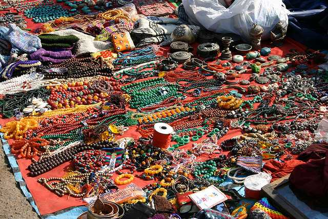
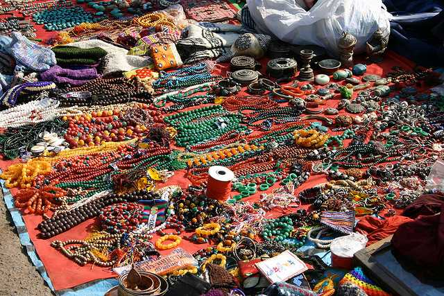
History of Bodh Gaya
Anciently known as Uruwela, Bodhgaya was situated on the banks of river Nerajana, now known as river Lilajan. King Ashoka is believed to have built the rst temple on the land. As per theory, Buddha was born in 563 BC in a land which now belongs to Nepal, on the auspicious night of Baisakhi Purnima. Born as the son of a king, Prince Siddhartha renounced his world possessions at the age of 29 and travelled far and wide in search of the eternal truth. After observing selfmortication for 6 years, he did not attain Vimukthi so he gave up the practice. He then discovered the Eightfold path which freed him from lust, hatred and delusion and thus attained enlightenment or ?Buddhatva?. The tree under which he gained enlightenment is the renowned Bodhi tree. He gained numerous followers in the days to follow and the village turned into a pilgrimage centre. Emperor Ashoka himself was one of his biggest disciples and he built the famous Mahabodhi temple. The sacred village gained momentum around the 13th century and plenty of shrines and temples were built. But soon after the area fell into the hands of the brutal Turkish emperors and they ransacked the city. The British rule later restored the city to its pure sacred form. At present, the city is one of the most important Buddhist pilgrim sites and is declared as world heritage site by UNESCO. The City of Enlightenment
Situated on the banks of river Neranjana, Bodh is a holy city in the state of Bihar. A UNESCO World Heritage Site today, Bodh was the place where Lord Buddha attained enlightenment and earned the name Bodhisattva. Thus, the small town is believed to be the most sacred place for Buddhists. Formerly known as Sambodhi, the city still holds evidence of Ashoka's contribution to commemorate Buddha's enlightenment and preach Buddhism. The small city holds several mysteries which leaves even historians mesmerised.
Anciently known as Uruwela, Bodhgaya was situated on the banks of river Nerajana, now known as river Lilajan. King Ashoka is believed to have built the rst temple on the land. As per theory, Buddha was born in 563 BC in a land which now belongs to Nepal, on the auspicious night of Baisakhi Purnima. Born as the son of a king, Prince Siddhartha renounced his world possessions at the age of 29 and travelled far and wide in search of the eternal truth. After observing selfmortication for 6 years, he did not attain Vimukthi so he gave up the practice. He then discovered the Eightfold path which freed him from lust, hatred and delusion and thus attained enlightenment or ?Buddhatva?. The tree under which he gained enlightenment is the renowned Bodhi tree. He gained numerous followers in the days to follow and the village turned into a pilgrimage centre. Emperor Ashoka himself was one of his biggest disciples and he built the famous Mahabodhi temple. The sacred village gained momentum around the 13th century and plenty of shrines and temples were built. But soon after the area fell into the hands of the brutal Turkish emperors and they ransacked the city. The British rule later restored the city to its pure sacred form. At present, the city is one of the most important Buddhist pilgrim sites and is declared as world heritage site by UNESCO. The City of Enlightenment
Situated on the banks of river Neranjana, Bodh is a holy city in the state of Bihar. A UNESCO World Heritage Site today, Bodh was the place where Lord Buddha attained enlightenment and earned the name Bodhisattva. Thus, the small town is believed to be the most sacred place for Buddhists. Formerly known as Sambodhi, the city still holds evidence of Ashoka's contribution to commemorate Buddha's enlightenment and preach Buddhism. The small city holds several mysteries which leaves even historians mesmerised.
Kolkata Tourism -- "The city of Joy"
Labeled as the 'City of Joy', the 'Cultural capital of India', Kolkata (formerly known as Calcutta) is a city with character and remnants of British Raj visible in its
Victorian-style architecture, trams and feel. It is one of the most densely populated cities in India With a heritage as dense and the population, this city along the
banks of river Ganga is known for its culture, people, food, music, literature and the movies.
Kolkata is famous for its colonial edices and modern amusement houses. The Victoria Memorial is where Queen Victoria spent some years of her life.
Thinks To Do
Victoria Memorial
Howrah Bridge
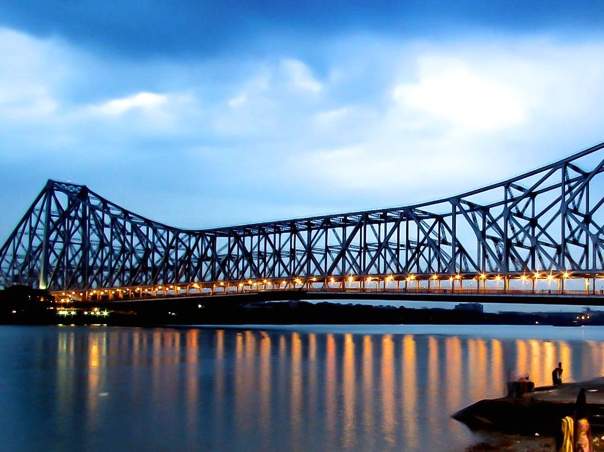
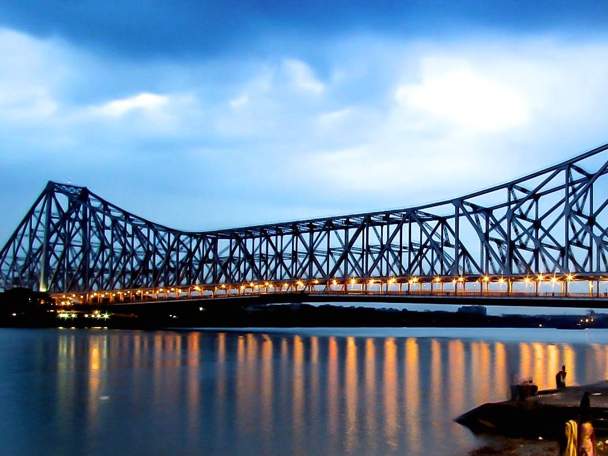
Indian Museum
Belur Math
History of Calcutta
The history of Kolkata is intimately related with its invention during the British rule dating back 300 years ago. Earlier known as Calcutta, it originated as a capital of British India in 1960 when East India Company dominated the country. Struggling to develop during Britain?s power war, most of its essential developments took place in the 17th and 18th century. Later in the 19th century, Kolkata become one of the central point of India?s freedom struggle and after the capital shifted to New Delhi in 1911, it became a bustling port and the new cultural capital of India.
Calcutta - The Cultural Capital of India
Kolkata is not called the 'City of Joy' for nothing. Once the administrative capital of India until 1912, the current capital of West Bengal is unocially India's cultural capital. The beautiful conuence of both the native and the western culture can be found here, be it in the majestic charm of Fort William and Victoria Memorial, or the aura of places like Dakshineswar Kali Mandir and Kalighat Mandir. Kolkata is equally famous for its cuisines. From the spicy sh curry to the mouthwatering Sandesh and rosogollas, Kolkata is a literal paradise for the foodies residing in India. Snacks like Kathi roll and puchkas (Bengali version of the famous golgappas) are not far behind. However, this is not the end. The obsession for sports, primarily the cricket and soccer, and literature in this city is world famous. No wonder why sleuths like Feluda and Byomkesh Bakshi have their origins in Kolkata, apart from the crowd puller matches at Salt Lake Stadium and Eden Gardens. Kolkata is also popular for its underground metro, the rst of its kind in India, and a must-visit if you're in Kolkata. For those, who visit the city at the time of Durga Puja, the cultural heaven just descends here at this time. To sum up, nowhere will the essence of the culture in India seem as magical as in Kolkata.
The history of Kolkata is intimately related with its invention during the British rule dating back 300 years ago. Earlier known as Calcutta, it originated as a capital of British India in 1960 when East India Company dominated the country. Struggling to develop during Britain?s power war, most of its essential developments took place in the 17th and 18th century. Later in the 19th century, Kolkata become one of the central point of India?s freedom struggle and after the capital shifted to New Delhi in 1911, it became a bustling port and the new cultural capital of India.
Calcutta - The Cultural Capital of India
Kolkata is not called the 'City of Joy' for nothing. Once the administrative capital of India until 1912, the current capital of West Bengal is unocially India's cultural capital. The beautiful conuence of both the native and the western culture can be found here, be it in the majestic charm of Fort William and Victoria Memorial, or the aura of places like Dakshineswar Kali Mandir and Kalighat Mandir. Kolkata is equally famous for its cuisines. From the spicy sh curry to the mouthwatering Sandesh and rosogollas, Kolkata is a literal paradise for the foodies residing in India. Snacks like Kathi roll and puchkas (Bengali version of the famous golgappas) are not far behind. However, this is not the end. The obsession for sports, primarily the cricket and soccer, and literature in this city is world famous. No wonder why sleuths like Feluda and Byomkesh Bakshi have their origins in Kolkata, apart from the crowd puller matches at Salt Lake Stadium and Eden Gardens. Kolkata is also popular for its underground metro, the rst of its kind in India, and a must-visit if you're in Kolkata. For those, who visit the city at the time of Durga Puja, the cultural heaven just descends here at this time. To sum up, nowhere will the essence of the culture in India seem as magical as in Kolkata.
Konark Tourism -- "The city of the Sun Temple"
Konark, in the state of Orissa is renowned world over for the Sun Temple which is
also a UNESCO World Heritage Site, the Annual dance festival and its beautiful sandy beaches.
Konark's Sun Temple is an architectural marvel and is one of the most beautiful monuments of India. The Annual Dance Festival is a ve day-long cultural
extravaganza which invites unique dancing talent from all over the country. This festival is a grand celebration of our country's rich cultural and artistic legacy,
an event to truly rejoice the various dance forms that our country has invented. The celebrations happen with the backdrop of the Sun temple, adding grandeur
and magnicence to the whole program. Besides this, Konark also hosts the Sun Festival, where devotees oer prayers to the Sun God by taking dips in the sea.
The Dance Festival also hosts a Handicrafts Mela where one can buy unique and exquisitely handcrafted pieces which beautifully reect the Oriya art form.
Thinks To Do
Sun Temple

Chandrabhaga Beach
ASI Museum
Konark Sea Beach
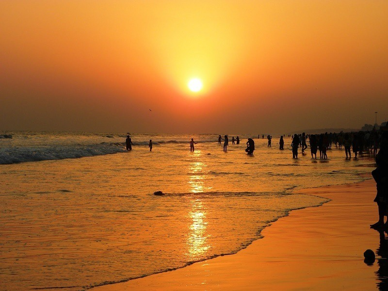
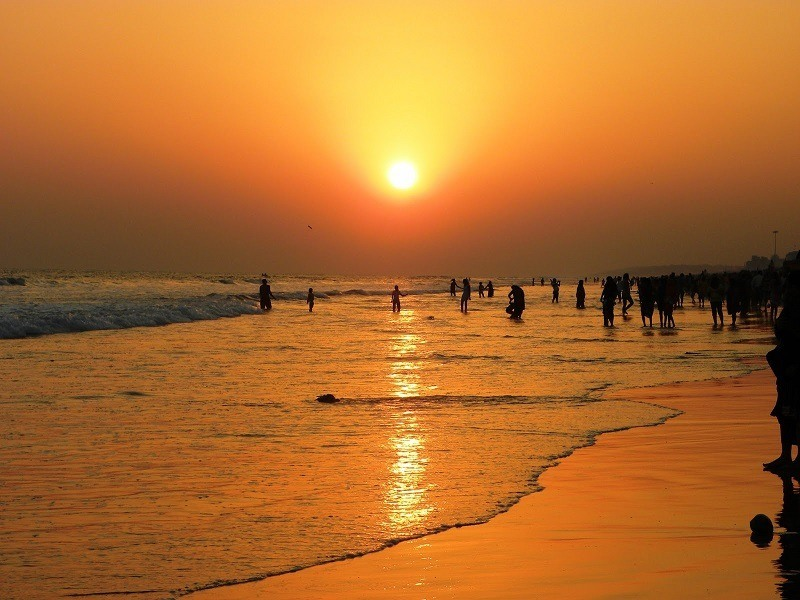
The city of Sun Temple
Konark is a beautiful coastal town near the Puri district, in the state of Odisha. It is most famous for the historic Sun Temple, dedicated to the mythological form of the Sun. Constructed in the 13th century, by King Narasimhadeva I of the Eastern Ganga dynasty, this temple complex was made in the fashion of Lord Suryadev holding the reins of his chariot. Due to the heavy structure and the weak soil of the area, the main structure collapsed in 1837, but the audience hall is still preserved and well maintained. Adjoining the structure is the beautiful beach of Konark. Annually, a famous dance festival at the Sun Temple Complex, which invites dancers from every part of India.
Restaurants and Local Food in Konark
One can nd a variety of vegetarian and non-vegetarian food in the main market place near the beach. The region's specialty is the sh-fry prepared in Bengalistyle. The other local delicacies that one must try, include Pakhala (a preparation of rice), Dali, Mandia Jau, Dahi Baigana, Dahi Machha, Dahi Bhindi (fried eggplant, fried sh, fried ladynger dipped in spicy yogurt sauce), Khatta, Aludum, a variety of Pithas, Dahi Badi, Rasgulla, Chhenapodapitha, Gulab Jamun and a attering variety of seafood. Continental and Chinese food is also served in the restaurants here.
Konark is a beautiful coastal town near the Puri district, in the state of Odisha. It is most famous for the historic Sun Temple, dedicated to the mythological form of the Sun. Constructed in the 13th century, by King Narasimhadeva I of the Eastern Ganga dynasty, this temple complex was made in the fashion of Lord Suryadev holding the reins of his chariot. Due to the heavy structure and the weak soil of the area, the main structure collapsed in 1837, but the audience hall is still preserved and well maintained. Adjoining the structure is the beautiful beach of Konark. Annually, a famous dance festival at the Sun Temple Complex, which invites dancers from every part of India.
Restaurants and Local Food in Konark
One can nd a variety of vegetarian and non-vegetarian food in the main market place near the beach. The region's specialty is the sh-fry prepared in Bengalistyle. The other local delicacies that one must try, include Pakhala (a preparation of rice), Dali, Mandia Jau, Dahi Baigana, Dahi Machha, Dahi Bhindi (fried eggplant, fried sh, fried ladynger dipped in spicy yogurt sauce), Khatta, Aludum, a variety of Pithas, Dahi Badi, Rasgulla, Chhenapodapitha, Gulab Jamun and a attering variety of seafood. Continental and Chinese food is also served in the restaurants here.
Darjeeling Tourism -- "Queen of The Hills"
Household name because of its varieties of teas, Darjeeling is a hill station with vast expanses of tea estates and Tibetan inuence in their craft, culture and
cuisine.
A previous summer capital of India under the British Raj, Darjeeling has come o age as one of the most sought after hill stations in India. Famous for its
beautiful tea plantations and the quality of Darjeeling tea, Darjeeling is a delight for all kind of tourists. The toy train established back in 1881, still runs in this
part and is also one of the UNESCO World Heritage sites. Beautiful colonial architecture including mansions and churches dot this little beautiful town. Filled
with people from Tibet, Nepal, nearby Indian states and the Gorkhas, Darjeeling is brimming with cultural diversity. The third highest peak in the world and the
highest in India, the Kanchenjunga peak is clearly visible from here and you can enjoy a panoramic view of the peak. Some of Darjeeling's most popular
attractions include monasteries, botanical gardens, a zoo, and the Darjeeling-Rangeet Valley Passenger Ropeway cable car which happens to be the longest
Asian cable car. Darjeeling is a wonderful place to walk around and explore the tea estates, villages, and markets.
Thinks To Do
Tiger Hill
Rock Garden
Darjeeling Himalayan Railway
Japanese Peace Pagoda

History of Darjeeling
The name Darjeeling means the "the land of the thunderbolt", derived from the Tibet word "Dorje" meaning "thunder" and "ling" meaning ?piece of land?. Prior to its acquisition by East India Company, Darjeeling used to be a part of Sikkim and even before that, a part of Nepal. In February 1829, a dispute broke out between Nepal and Sikkim about their borders and hence, Lord William Bentinck- Governor General of India at the time, set out to resolve the situation. In the process, he realised that the quaint hill town had strategic advantages for trade and military outpost. Later, it was also realised that the land was ideal for tea plantations. The district underwent major development and became a major tourist attraction visited by the British ocials. It, therefore, earned itself the title of "Queen of hills". After independence, the district was merged with West Bengal and since then is one of the most popular hill stations in India.
Culture of Darjeeling
Darjeeling has a unique and diverse culture. The city is a home to mix immigrants from Nepal, Sikkim, Tibet, Bhutan and even Europe, due to work opportunities in tea plantations in the bygone era. Hinduism and Vajyarana Buddhism are the main religions of the people. One of the major festivals of Darjeeling is Losar, primarily their new year, which is celebrated in January or February depending on the position of the moon (lunar calendar). Darjeeling Carnival is another major festival held annually. The fair involves a display of folk dance and arts. Local rock bands participate in the same. Other important festivals are Makar Sankranti, Chotrul Duchen (Buddhist festival commemorating the four events in the life of Gautam Buddha), Tendong Lho Rumfaat (Prayer of the Tendong mountain) etc.
The name Darjeeling means the "the land of the thunderbolt", derived from the Tibet word "Dorje" meaning "thunder" and "ling" meaning ?piece of land?. Prior to its acquisition by East India Company, Darjeeling used to be a part of Sikkim and even before that, a part of Nepal. In February 1829, a dispute broke out between Nepal and Sikkim about their borders and hence, Lord William Bentinck- Governor General of India at the time, set out to resolve the situation. In the process, he realised that the quaint hill town had strategic advantages for trade and military outpost. Later, it was also realised that the land was ideal for tea plantations. The district underwent major development and became a major tourist attraction visited by the British ocials. It, therefore, earned itself the title of "Queen of hills". After independence, the district was merged with West Bengal and since then is one of the most popular hill stations in India.
Culture of Darjeeling
Darjeeling has a unique and diverse culture. The city is a home to mix immigrants from Nepal, Sikkim, Tibet, Bhutan and even Europe, due to work opportunities in tea plantations in the bygone era. Hinduism and Vajyarana Buddhism are the main religions of the people. One of the major festivals of Darjeeling is Losar, primarily their new year, which is celebrated in January or February depending on the position of the moon (lunar calendar). Darjeeling Carnival is another major festival held annually. The fair involves a display of folk dance and arts. Local rock bands participate in the same. Other important festivals are Makar Sankranti, Chotrul Duchen (Buddhist festival commemorating the four events in the life of Gautam Buddha), Tendong Lho Rumfaat (Prayer of the Tendong mountain) etc.
Puri Tourism -- "Rath Yatra and the Beaches"
One of the four must-visit pilgrimage sites for Hindus (Char-Dham), Puri is a beach city with its most famous attraction as the Jagannath temple.
Known as the resting place of Lord Shiva, Puri in the state of Orissa is situated alongside the coast of Bay of Bengal. This town is home to one of the most
sacred temples in Hindu mythology, the Jagannath Temple. The majestic history and heritage of Puri date back to the 3rd century B. C. Puri, Konark
and Bhubaneshwar complete the Golden Triangle of Orissa, with their religious signicance and cultural heritage
being the centres of tourism in this state. There are a lot of places near Puri that one must visit, like the Chilika lake, Puri beach ,
Gundicha Ghar and the very famous Sun temple of Konark. Puri is soon turning into an industrial hub with major manufacturing companies coming here. The
Rath Yatra(chariot festival) which takes place during the month of June-July should not be missed if you are planning to visit during this time.
Thinks To Do
Sri Jagannath Temple
Puri Beach
Chilika Lake
Lokanath Temple
Culture of Puri
Culture is a blend of mind and spirit where people exist in an environment with their growing art, customs and practices. Puri, in Odisha, adapts its culture from various festivals which are celebrated through the year. Amongst these festivals, Rath Yatra at Jagannath Temple is of great signicance. In addition to these festivals, Puri extracts its culture from other festivals like the Snana Yatra, Chandan Yatra and the Car festival. The Chariot festival or Rath Yatra is however native to the state of Odisha, yet it is celebrated across India. Puri is also a birthplace of many religious cults such as Vaishnavism. The historic Jagannath culture of Puri was also sculpted out of Vaishnavism. Since Puri is situated on the shore of the state, its traditional art form includes seashell crafts. Puri?s culture is a symbolic representation of its history, architecture, literature, art and craft with a dominance of worship culture.
Beaches in Puri
Other than the famous Jagannath Yatra and various temples, Puri is also popular for its beaches. Puri Beaches are a great place to swim about or simply even lie around enjoying the lashing waves. Water lovers and pilgrims alike visit and relax at the tempting beaches in Puri.There are around ve beaches of great prominence in Puri namely Balighai beach, Beleswar beach, Swargadwar beach, Puri beach, and the Chandrabhaga beach. Puri beach or the Golden beach is considered as Hindu holy place which also organises the annual Puri Beach Festival in November. Furthermore, it is famous for sand sculptures made by Sudarsan Pattnaik, the world-famous sand artist.
Culture is a blend of mind and spirit where people exist in an environment with their growing art, customs and practices. Puri, in Odisha, adapts its culture from various festivals which are celebrated through the year. Amongst these festivals, Rath Yatra at Jagannath Temple is of great signicance. In addition to these festivals, Puri extracts its culture from other festivals like the Snana Yatra, Chandan Yatra and the Car festival. The Chariot festival or Rath Yatra is however native to the state of Odisha, yet it is celebrated across India. Puri is also a birthplace of many religious cults such as Vaishnavism. The historic Jagannath culture of Puri was also sculpted out of Vaishnavism. Since Puri is situated on the shore of the state, its traditional art form includes seashell crafts. Puri?s culture is a symbolic representation of its history, architecture, literature, art and craft with a dominance of worship culture.
Beaches in Puri
Other than the famous Jagannath Yatra and various temples, Puri is also popular for its beaches. Puri Beaches are a great place to swim about or simply even lie around enjoying the lashing waves. Water lovers and pilgrims alike visit and relax at the tempting beaches in Puri.There are around ve beaches of great prominence in Puri namely Balighai beach, Beleswar beach, Swargadwar beach, Puri beach, and the Chandrabhaga beach. Puri beach or the Golden beach is considered as Hindu holy place which also organises the annual Puri Beach Festival in November. Furthermore, it is famous for sand sculptures made by Sudarsan Pattnaik, the world-famous sand artist.
Gangtok Tourism -- "The Gateway to Sikkim"
Extremely alluring, pleasantly boisterous and wreathed in clouds - Gangtok, the capital city of the Sikkim can also give you a spectacular view of Mt. Kanchenjunga,
at a distant skyline. The pristine hill station nestled in mountains and clouds is also a base for a whole lot of trekkers to the Himalayan mountain ranges. The
mesmerising prismatic beauty and the beautiful winding hill roads are even more breathtaking if seen from a bird?s eye view in a cable car.
The name meaning hill-top, Gangtok can be safely said to be one of the most beautiful hill stations in the country. With everything in just the right amount from
a blend of cultural identities to urbanisation, Gangtok is a breathing and dynamic bit of paradise of the northeast. It has an amazing view of mount
Kanchenjunga, the third highest mountain peak in the world. Also like everything around it, Gangtok is abundant in natural beauty and has various natural
attractions such as the Tsomgo Lake, Ban Jhakri falls, Tashi viewpoint and more.
Thinks To Do
Nathulapass

Ban Jhakri Falls
Ganesh Tok

Tsongmo Lake

History
Much like the rest of Sikkim, not much is known about the history of the town. It remained a small boondock until after the construction of Enchey Monastery of Buddhist teachings in 1840 which made it a pilgrimage centre. It became a prominent town after the British invasion and then became the centre for trade between Tibet and British India. Most of the roads were built during this time, the infrastructure was improved, and the telegraph system was modied. Following India?s independence in 1947. Gangtok remained an independent monarchy, and a treaty was signed between King Chogyal and the then Prime Minister of India- Jawaharlal Nehru, to follow the monarch rule. The state and its capital did not follow the democratic rule. Finally in 1975, after decades of political uncertainties, struggles and riots, the monarchy was abrogated, and Sikkim became the twenty-second state of India with Gangtok as its ocial capital
Culture
Gangtok is inhabited by people from dierent ethnicities including Nepalese, Bhutias, and Lepchas. These various religious groups and communities keep the traditional culture and identity of the city alive. Buddhism and Hinduism are the two majorly followed religion. Gangtok has several monasteries and religious institutions. Dierent festivals celebrated in Gangtok are a mark of the rich cultural heritage. Other than Diwali, Holi and Christmas; Saga Dawa is a famous Buddhist festival. There is also Phang Lhabsol, celebrated in the honour of Mount Kanchenjunga among other religious festivals. Annual Gangtok Food and Cultural Festival is also organised by the government every year. Music is a much- loved form of entertainment in Gangtok. The Sikkimese cuisine is served in local restaurants which include momos, thukpas, noodles etc.
Much like the rest of Sikkim, not much is known about the history of the town. It remained a small boondock until after the construction of Enchey Monastery of Buddhist teachings in 1840 which made it a pilgrimage centre. It became a prominent town after the British invasion and then became the centre for trade between Tibet and British India. Most of the roads were built during this time, the infrastructure was improved, and the telegraph system was modied. Following India?s independence in 1947. Gangtok remained an independent monarchy, and a treaty was signed between King Chogyal and the then Prime Minister of India- Jawaharlal Nehru, to follow the monarch rule. The state and its capital did not follow the democratic rule. Finally in 1975, after decades of political uncertainties, struggles and riots, the monarchy was abrogated, and Sikkim became the twenty-second state of India with Gangtok as its ocial capital
Culture
Gangtok is inhabited by people from dierent ethnicities including Nepalese, Bhutias, and Lepchas. These various religious groups and communities keep the traditional culture and identity of the city alive. Buddhism and Hinduism are the two majorly followed religion. Gangtok has several monasteries and religious institutions. Dierent festivals celebrated in Gangtok are a mark of the rich cultural heritage. Other than Diwali, Holi and Christmas; Saga Dawa is a famous Buddhist festival. There is also Phang Lhabsol, celebrated in the honour of Mount Kanchenjunga among other religious festivals. Annual Gangtok Food and Cultural Festival is also organised by the government every year. Music is a much- loved form of entertainment in Gangtok. The Sikkimese cuisine is served in local restaurants which include momos, thukpas, noodles etc.
Tawang Tourism -- ""The birth place of Dalai Lama"
Located at a height of about 3048m, is known for many important and beautiful monasteries and is famous as the birth place of Dalai Lama.
The beautiful town of Tawang, also pronounced as Dawang has many sceneries to make your trip a picturesque one. However, what begins to dene the area is
its signicance for Buddhist monks. Tawang is the place to go for monasteries, with the Tawang Monastery being the most popular one and extremely sacred for the Buddhists. Tawang is a place which will atter you with its natural
beauty wrapped in the scent of spirituality. The beautiful orchid sanctuary and the Tipi Orchid Sanctuary is also an ideal place for your list of places to visit.
Along with this one can have their taste buds to have an experience of Tawang by indulging into the area's unique
cuisine.
Thinks To Do
Tawang Monastery

Sela Pass and Lake

Bap Teng Kang
Gorichen Peak
A city of peace and pride
Situated at an elevation of 10,000 feet, Tawang is a Buddhist mountain town in the western part of Arunachal Pradesh. Connected to the rest of India via the Sela Pass, Tawang, popularly known as the 'land of Monpas', is a historically important town, forming an important part of the Silk Route and also a reminder of the sacrices of the men guarding our nation in the borders. Protecting stories of valour and patriotism Tawang is famous for the largest Buddhist Monastery in India which also gives the town its name. The picturesque and seldom traversed town also holds several natural marvels like the Madhuri Lake which enchants each and every tourist visiting the place. The snow covered peaks in Tawang has also gained popularity as a perfect skiing spot over the years.
Restaurants and Local Food in Tawang
The cuisine here is a blend of traditional North-Eastern food and a colourful and spicy inuence of Monpas, making it standout a little. Also, the richest, most colorful and delicious from of Tawang's food is found on its street, giving birth to a vibrant street food culture. One must try the mouth watering Paratha-Sabzi, Zan, local versions of a pancake as well as a rich Biryani called Gyapa Khazi. Other than these, don't miss the staple Momos and Thukpa.
Situated at an elevation of 10,000 feet, Tawang is a Buddhist mountain town in the western part of Arunachal Pradesh. Connected to the rest of India via the Sela Pass, Tawang, popularly known as the 'land of Monpas', is a historically important town, forming an important part of the Silk Route and also a reminder of the sacrices of the men guarding our nation in the borders. Protecting stories of valour and patriotism Tawang is famous for the largest Buddhist Monastery in India which also gives the town its name. The picturesque and seldom traversed town also holds several natural marvels like the Madhuri Lake which enchants each and every tourist visiting the place. The snow covered peaks in Tawang has also gained popularity as a perfect skiing spot over the years.
Restaurants and Local Food in Tawang
The cuisine here is a blend of traditional North-Eastern food and a colourful and spicy inuence of Monpas, making it standout a little. Also, the richest, most colorful and delicious from of Tawang's food is found on its street, giving birth to a vibrant street food culture. One must try the mouth watering Paratha-Sabzi, Zan, local versions of a pancake as well as a rich Biryani called Gyapa Khazi. Other than these, don't miss the staple Momos and Thukpa.
Majuli Tourism -- "World's Largest Fresh Water Island"
Majuli is a lush green environment-friendly, pristine and pollution free fresh water island in the river Brahmaputra, just 20 km from the Jorhat city.
With a total area of 1250 sq. km, Majuli is the world's largest river island and it attracts tourists from all over the world. Among one of the most surreal places in
India, Majuli is also a strong contender for a place in UNESCO's World Heritage Sites. Mostly inhabited by Tribals, the culture of Majuli is unique and quite
interesting and is one of the key reasons why people love this place so much. It is also called the cultural capital of Assam. The festivals celebrated here are all
joyous and vibrant. The main festival in the town of Majuli is called Raas and witnessing it is an interesting spectacle."
Thinks To Do
Kamalabari Satra

Garmur
Tengapania
Auniati Satra
Assamese Architectural in Majuli
Dierent parts of India show us glimpses of the various architectural styles. Majuli's buildings reected the architectural style of the bygone era when the kings and queens used to rule. Many of the monuments are preserved due to their sheer signicance regarding history and architecture. The Dakhinpat Satra in Jorhat District is an excellent example of the Assamese architectural style. The gates are decorated with pictures of owers and animals. Various such paintings embellish the insides of Dakhinpat Satra. Nearby monuments like Tengapania are also famous for their Ahom architectural style which is popular in Assam.
Restaurants and Local Food in Majuli
Majuli will not oer anything exquisite or unique but simple, ordinary and typical food with handful of popular items o the the local state menu can be found here. The options can be somewhat limited and you might want to carry some food from home for a trip to Majuli. The popular items that you might nd here include Khar, Laksa, Tenga and a few varieties of rice.
Dierent parts of India show us glimpses of the various architectural styles. Majuli's buildings reected the architectural style of the bygone era when the kings and queens used to rule. Many of the monuments are preserved due to their sheer signicance regarding history and architecture. The Dakhinpat Satra in Jorhat District is an excellent example of the Assamese architectural style. The gates are decorated with pictures of owers and animals. Various such paintings embellish the insides of Dakhinpat Satra. Nearby monuments like Tengapania are also famous for their Ahom architectural style which is popular in Assam.
Restaurants and Local Food in Majuli
Majuli will not oer anything exquisite or unique but simple, ordinary and typical food with handful of popular items o the the local state menu can be found here. The options can be somewhat limited and you might want to carry some food from home for a trip to Majuli. The popular items that you might nd here include Khar, Laksa, Tenga and a few varieties of rice.
North Sikkim Tourism
One of the most uninhabited areas of the country, yet extremely beautiful and charming, North Sikkim (https://www.holidify.com/state/sikkim/) shares its
boundary with China and Nepal.
Mangan is the headquarters of the North Sikkim district. It is one of the most
mystically beautiful though unexplored areas due to the harsh conditions found here. Located at an altitude of 956 meters the town of Mangan serves as a
base for trekking and hiking trips in the mountains and forests. North Sikkim is famous for the Gurudongmar Lake which is one of the highest lakes of India. It also has religious importance. Apart from lakes, there are some
important monasteries in this area too.
Thinks To Do
Gurudongmar Lake

Thangu Valley
Yumthang

Lachen
Heaven on Earth
North-Sikkim is a district located in the state of Sikkim. Out of the four districts of Sikkim, North-Sikkim is largest and the least populated. It is also the district headquarter of Mangan. North-Sikkim oers an amazing view of scenic beauty with its landscape full of majestic mountains, dense forests, several delightful waterfalls and of course the weather. The peaks of the Himalayas can be seen from here, especially the peak of the Kanchenjunga, the highest peak of the Himalayas. North-Sikkim is generally restricted to tourists and travellers due to its location on the India - China border. You would need permits in order to vacation there. Beautiful wildowers and owering trees that habitat the area surrounding the streams and rivers only add to its alluring charm. The Khangchendzonga National Park is one of the major attractions in North-Sikkim. The Red Panda is a native of North-Sikkim. It is the State Animal of Sikkim. The Shingba Wildlife Sanctuary is also based here. North-Sikkim is an unique destination and promises to give you a very dierent experience than any other vacation. You can either communicate in English or Hindi as the travel guides and drivers are well versed in both these languages.
Restaurants and Local Food in North Sikkim
The cuisine of the area remains pretty constant in constant across the state in terms of ingredients, styles and popular items. The towns are dierentiated very slightly in terms of food with a few delicacies in or out of the menu. Momos and a variety of Thukpa remain staple while you can try a number of fermented foods here such as Gundruk and Sinki, Chhurpi soup, Tama curry and Masauyra Curry. tease your taste buds a little with the pickles available here such as Shimi ko Achar, Silam ko Achar, Sidra ko Achar and more. Other preparations include Khalo Dal, Saelroti, Sishnu Soup, Chang and more.
North-Sikkim is a district located in the state of Sikkim. Out of the four districts of Sikkim, North-Sikkim is largest and the least populated. It is also the district headquarter of Mangan. North-Sikkim oers an amazing view of scenic beauty with its landscape full of majestic mountains, dense forests, several delightful waterfalls and of course the weather. The peaks of the Himalayas can be seen from here, especially the peak of the Kanchenjunga, the highest peak of the Himalayas. North-Sikkim is generally restricted to tourists and travellers due to its location on the India - China border. You would need permits in order to vacation there. Beautiful wildowers and owering trees that habitat the area surrounding the streams and rivers only add to its alluring charm. The Khangchendzonga National Park is one of the major attractions in North-Sikkim. The Red Panda is a native of North-Sikkim. It is the State Animal of Sikkim. The Shingba Wildlife Sanctuary is also based here. North-Sikkim is an unique destination and promises to give you a very dierent experience than any other vacation. You can either communicate in English or Hindi as the travel guides and drivers are well versed in both these languages.
Restaurants and Local Food in North Sikkim
The cuisine of the area remains pretty constant in constant across the state in terms of ingredients, styles and popular items. The towns are dierentiated very slightly in terms of food with a few delicacies in or out of the menu. Momos and a variety of Thukpa remain staple while you can try a number of fermented foods here such as Gundruk and Sinki, Chhurpi soup, Tama curry and Masauyra Curry. tease your taste buds a little with the pickles available here such as Shimi ko Achar, Silam ko Achar, Sidra ko Achar and more. Other preparations include Khalo Dal, Saelroti, Sishnu Soup, Chang and more.
Shiliong Tourism -- "Scotland of the East"
A beautiful city encircled by pine trees, Shillong is the capital of Meghalaya. It derives its name from Lei Shyllong, an idol worshipped at the Shillong Peak. Standing
as tall as 1496 meters, Shillong provides a relief from the heat across the country. This hill station is known for its picturesque sights and traditions. The soothing
climate makes Shillong suitable to visit in all seasons. The light drizzles and the cooling gentle wind adds to the joy of visiting this hill station. This place is also
known as the ?Scotland of the East?. One can nd descendants of the Khyrim, Mylliem, Maharam, Mallaisohmat, Bhowal and Langrim tribes.
Shillong, the capital of Meghalaya, is the home to numerous waterfalls. The exciting mountain peaks, crystal clear lakes, breathtakingly beautiful golf courses,
museums and the zoo are the key reasons why people visit Shillong. Apart from the natural beauty, Shillong also acts as the gateway to Meghalaya, the state
famous for heavy rainfalls, caving, tallest waterfalls, beautiful landscapes and amazing people and culture. Shillong in particular has been in limelight for its
jovial people and their culture. Interestingly, Shillong has a very westernised culture and it has a very young feel to it. Shillong is also famous as the music
capital of India, as many prominent musicians have hailed from this place. Many music events keep happening throughout the year, making it a very lively
place.
Thinks To Do
Mawlynnong

Umiam lake
Shillong Peak
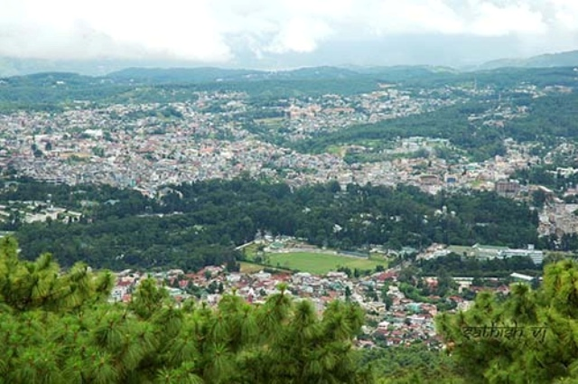
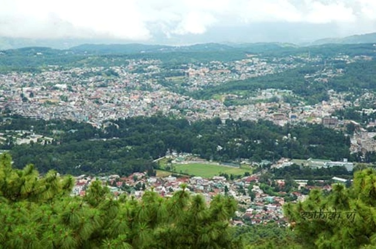
Mawsynram

Nature's Paradise
Famed as "Scotland of the East", Shillong brings to you a true nature?s paradise ourished with rich culture. Shillong is wrapped with hills, greenery and sheer serenity. The waterfalls and lakes of Shillong are the perfect spots to nd peace of mind and add a lovely contrast to the panorama that comprises green in majority
Nightlife in Shillong
The nightlife in Shillong is quite unique in its own sense. It is not very happening or electrifying like what nightlife is usually assumed to be. In Shillong, nightlife is slow and steady. People usually like to relax and have a drink or two at some of the bars Shillong has. However, the city doesn?t lack nightlife completely. One can nd, Shillong has many pubs, bars and discos. The nightlife in Shillong has slowly shifted from sedate to a happening one. Some of the best places to experience the nightlife in Shillong are Cloud 9, Caf Shillong, Tango and Platinum.
Famed as "Scotland of the East", Shillong brings to you a true nature?s paradise ourished with rich culture. Shillong is wrapped with hills, greenery and sheer serenity. The waterfalls and lakes of Shillong are the perfect spots to nd peace of mind and add a lovely contrast to the panorama that comprises green in majority
Nightlife in Shillong
The nightlife in Shillong is quite unique in its own sense. It is not very happening or electrifying like what nightlife is usually assumed to be. In Shillong, nightlife is slow and steady. People usually like to relax and have a drink or two at some of the bars Shillong has. However, the city doesn?t lack nightlife completely. One can nd, Shillong has many pubs, bars and discos. The nightlife in Shillong has slowly shifted from sedate to a happening one. Some of the best places to experience the nightlife in Shillong are Cloud 9, Caf Shillong, Tango and Platinum.